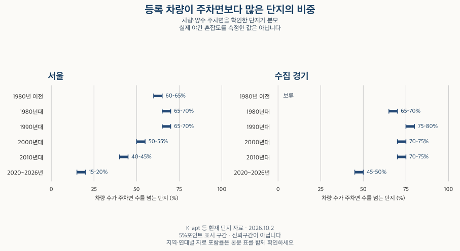

아파트의 진화 · 등록 차량과 주차
아파트 주차난, 등록 차량이 주차면보다 많은 단지는?
K-apt 등록 차량과 주차면을 준공 연대·지역별로 비교합니다. 단지별 분포와 합계 비율, 세대당 주차면의 차이, 자료 포함률과 실제 야간 주차 상황을 확인할 조건을 설명합니다.
분석 기간 · 현재 등록 차량·주차 2026.10.2 · 준공 연대별 비교 | 자료 기준일 · 공식 필드 확인 2026-10-16
세대당 주차면이 1대 이상이어도 귀가할 때 자리가 부족할 수 있습니다. 주차 공급뿐 아니라 등록된 차량이 얼마나 되는지도 봐야 하기 때문입니다. 서울·수집 경기의 현재 단지 자료에서 등록 차량과 주차면을 함께 확인한 집합을 비교했습니다.
등록 차량은 실제 주차 중인 차량과 같은가요?
K-apt 관리시설정보는 이 항목을 입주민 차량 등록대장 기준의 차량 보유 대수로 표시합니다. 전체 차량과 전기차가 따로 있습니다. 이 글은 전체 등록 차량을 현재 총주차면으로 나눕니다. 예를 들어 등록 차량이 주차면보다 많으면 비율이 1을 넘습니다. 표에서는 읽기 쉽게 주차 100면당 등록 차량 수로 표시합니다.
등록대장에는 이사 후 정리가 늦은 차량이 남아 있을 수 있고, 등록됐어도 특정 시간에는 다른 곳에 있을 수 있습니다. 반대로 방문 차량이나 등록되지 않은 차량이 주차 공간을 사용할 수 있습니다. 따라서 이 비율은 등록 차량의 부담을 비교하는 출발점이며, 실제 혼잡 시간대와 빈자리 수는 현장에서 확인해야 합니다.
차량을 0대로 적은 값과 공란은 구분했습니다. 기본 비교는 명시된 0대를 포함하고, 차량이 양수인 경우만 따로 비교합니다. 주차면이 0이거나 확인되지 않으면 비율을 계산하지 않습니다. 전기차 수가 전체 차량보다 많거나 지상·지하 합계가 총주차와 맞지 않는 기록도 있어 구성값이 일치하는 집합을 별도로 보여 줍니다.
오래된 단지에서 주차면보다 차량이 많은 비중이 높나요?
현재 남아 있는 단지의 준공 연대로 나누면 최근 연대에서 그 비중이 낮아지는 모습이 나타납니다. 다만 서울과 수집 경기는 같은 수준이 아닙니다. 2020~2026년 준공 집합에서 차량이 주차면보다 많은 비중은 서울 15~20%, 수집 경기 45~50% 구간입니다. 1990년대는 각각 65~70%, 75~80% 구간입니다.

| 지역 | 준공 연대 | 하위 25% 경계 | 중위 | 상위 25% 경계 | 차량이 주차면보다 많은 단지 | 합계 차량÷주차 |
|---|---|---|---|---|---|---|
| 서울 | 전체 | 90–100대 | 100–110대 | 110–120대 | 50–55% | 90–100대 |
| 서울 | 1980년 이전 | 90–100대 | 100–110대 | 130–140대 | 60–65% | 보류 |
| 서울 | 1980년대 | 90–100대 | 120–130대 | 160–170대 | 65–70% | 120–130대 |
| 서울 | 1990년대 | 100–110대 | 110–120대 | 130–140대 | 65–70% | 110–120대 |
| 서울 | 2000년대 | 90–100대 | 100–110대 | 100–110대 | 50–55% | 90–100대 |
| 서울 | 2010년대 | 90–100대 | 100–110대 | 100–110대 | 40–45% | 90–100대 |
| 서울 | 2020~2026년 | 60–70대 | 80–90대 | 90–100대 | 15–20% | 70–80대 |
| 서울 | 연도 미상 | 보류 | 보류 | 보류 | 보류 | 보류 |
| 서울 | 미래 연도 | 보류 | 보류 | 보류 | 보류 | 보류 |
| 수집 경기 | 전체 | 100–110대 | 110–120대 | 130–140대 | 70–75% | 100–110대 |
| 수집 경기 | 1980년 이전 | 보류 | 보류 | 보류 | 보류 | 보류 |
| 수집 경기 | 1980년대 | 100–110대 | 130–140대 | 170–180대 | 65–70% | 120–130대 |
| 수집 경기 | 1990년대 | 100–110대 | 120–130대 | 150–160대 | 75–80% | 120–130대 |
| 수집 경기 | 2000년대 | 100–110대 | 110–120대 | 130–140대 | 70–75% | 110–120대 |
| 수집 경기 | 2010년대 | 100–110대 | 110–120대 | 120–130대 | 70–75% | 100–110대 |
| 수집 경기 | 2020~2026년 | 80–90대 | 100–110대 | 110–120대 | 45–50% | 80–90대 |
| 수집 경기 | 연도 미상 | 보류 | 보류 | 보류 | 보류 | 보류 |
| 수집 경기 | 미래 연도 | 보류 | 보류 | 보류 | 보류 | 보류 |
중위값과 사분위는 단지별로 계산한 차량÷주차면을 작은 순서대로 놓았을 때의 경계입니다. ‘하위 25% 경계’는 제1사분위수, ‘상위 25% 경계’는 제3사분위수입니다. 서울 1980년대 집합의 중위는 주차 100면당 등록 차량 120~130대, 2020~2026년은 80~90대 구간입니다. 수집 경기의 같은 두 연대는 각각 130~140대, 100~110대 구간입니다. 한 단지가 몇 세대이든 단지별 분포에서는 한 번씩 셉니다.
이 결과로 준공 당시의 주차 여건이나 시간이 지나며 생긴 차량 증가를 추정하지는 않습니다. 지금의 등록 차량과 주차 시설을 과거 준공 연도로 묶었기 때문입니다. 입주 진행 정도, 차량 등록 갱신, 이후 시설 변경, 현재 남아 있는 단지의 구성도 다를 수 있습니다.
절반가량의 단지는 차량이 많은데, 합계에는 여유가 보일 수 있나요?
가능합니다. 서울의 기본 비교에서 등록 차량이 주차면보다 많은 단지 비중은 50~55% 구간이지만, 차량 합계÷주차면 합계는 주차 100면당 90~100대 구간입니다. 두 숫자는 계산 방식이 다릅니다. 앞의 비중은 조건을 만족하는 단지의 수를 세고, 뒤의 합계 비율은 주차 공간이 많은 단지에 더 큰 비중을 줍니다.
주차면이 많은 일부 단지의 낮은 등록 차량 비율이 합계를 낮출 수 있습니다. 한 지역의 남는 공간을 다른 단지 입주민이 자유롭게 이용할 수 있는 것도 아닙니다. 지역 합계에 여유가 보인다고 관심 단지에서도 주차가 쉽다고 결론 내릴 수 없습니다.
수집 경기의 합계 비율은 주차 100면당 100~110대 구간입니다. 이 역시 단지별 중위인 110~120대 구간과 같은 숫자가 아닙니다. 표의 분포·초과 비중·합계 비율은 각각 다른 질문에 답하며, 어느 하나를 대표 ‘주차난 점수’로 합치지 않았습니다.
세대당 주차면이 비슷하면 등록 차량 부담도 같을까요?
준공 연대별 세대당 주차면은 주차 공급을 비교합니다. 여기에 세대당 등록 차량을 함께 보면 공급만으로 설명하기 어려운 차이를 확인할 수 있습니다. 아래 두 중위값은 원천과 기존 단지 자료의 세대수가 일치하는 같은 단지 집합에서 구했습니다.
| 지역 | 준공 연대 | 100세대당 주차 중위 | 100세대당 차량 중위 | 세대수 확인 단지 | 차량·주차 확인 단지 | 확인 세대수 | 세대수 일치 단지 |
|---|---|---|---|---|---|---|---|
| 서울 | 전체 | 110–120대 | 110–120대 | 90–100% | 20–30% | 80–90% | 90–100% |
| 서울 | 1980년 이전 | 80–90대 | 90–100대 | 70–80% | 10–20% | 60–70% | 80–90% |
| 서울 | 1980년대 | 70–80대 | 90–100대 | 70–80% | 40–50% | 80–90% | 90–100% |
| 서울 | 1990년대 | 90–100대 | 100–110대 | 90–100% | 40–50% | 80–90% | 90–100% |
| 서울 | 2000년대 | 110–120대 | 120–130대 | 90–100% | 10–20% | 70–80% | 90–100% |
| 서울 | 2010년대 | 120–130대 | 120–130대 | 90–100% | 30–40% | 80–90% | 90–100% |
| 서울 | 2020~2026년 | 120–130대 | 100–110대 | 90–100% | 30–40% | 80–90% | 90–100% |
| 서울 | 연도 미상 | 보류 | 보류 | 보류 | 보류 | 보류 | 보류 |
| 서울 | 미래 연도 | 보류 | 보류 | 보류 | 보류 | 보류 | 보류 |
| 수집 경기 | 전체 | 110–120대 | 130–140대 | 80–90% | 50–60% | 90–100% | 90–100% |
| 수집 경기 | 1980년 이전 | 보류 | 보류 | 70–80% | 보류 | 보류 | 보류 |
| 수집 경기 | 1980년대 | 50–60대 | 80–90대 | 70–80% | 10–20% | 60–70% | 90–100% |
| 수집 경기 | 1990년대 | 80–90대 | 110–120대 | 80–90% | 50–60% | 80–90% | 90–100% |
| 수집 경기 | 2000년대 | 110–120대 | 140–150대 | 90–100% | 50–60% | 90–100% | 90–100% |
| 수집 경기 | 2010년대 | 120–130대 | 140–150대 | 90–100% | 60–70% | 90–100% | 90–100% |
| 수집 경기 | 2020~2026년 | 120–130대 | 120–130대 | 90–100% | 50–60% | 80–90% | 90–100% |
| 수집 경기 | 연도 미상 | 보류 | 보류 | 보류 | 보류 | 보류 | 보류 |
| 수집 경기 | 미래 연도 | 보류 | 보류 | 보류 | 보류 | 보류 | 보류 |
2020~2026년 집합의 100세대당 주차면 중위는 서울·수집 경기 모두 120~130대 구간입니다. 같은 집합의 등록 차량 중위는 서울 100~110대, 수집 경기 120~130대 구간입니다. 표시된 주차 공급이 비슷해도 등록 차량의 분포가 같지는 않습니다.
차량 중위값을 주차 중위값으로 나누어 앞의 비율 중위값을 계산하면 안 됩니다. 두 중위값을 결정하는 단지가 서로 다를 수 있습니다. 또 세대수 일치 비교는 앞의 차량·주차 비교보다 집합이 좁아질 수 있으므로 ‘세대수 일치 단지’의 포함률을 함께 확인해야 합니다.
최근 단지라고 등록 차량이 적다고 일반화하지도 않습니다. 가족 구성·입지·대중교통 이용, 입주가 진행 중인 정도, 등록 관리 방식 등은 이 비교에서 분리하지 못했습니다. 세대당 주차면과 세대당 등록 차량은 관심 단지에서 각각 확인할 항목입니다.
0대를 제외하거나 자료 조건을 바꾸면 어떻게 달라지나요?
아래 표는 기본 비교와 차량이 양수인 경우, 주차 구성 및 전체·전기차 구성이 일치하는 경우, 최신 원본만, 아파트 유형만 남긴 경우를 나란히 보여 줍니다. ‘구성 일관’은 적힌 숫자끼리 맞는다는 뜻이며 현장 대조를 통과했다는 뜻은 아닙니다. 같은 단지의 시간 변화로 읽지 않습니다.
| 지역 | 조건 | 하위 25% 경계 | 중위 | 상위 25% 경계 | 차량이 주차면보다 많은 단지 | 합계 차량÷주차 |
|---|---|---|---|---|---|---|
| 서울 | 아파트 유형만 | 90–100대 | 100–110대 | 110–120대 | 55–60% | 90–100대 |
| 수집 경기 | 아파트 유형만 | 100–110대 | 110–120대 | 130–140대 | 70–75% | 100–110대 |
| 서울 | 구성 일관 | 90–100대 | 100–110대 | 110–120대 | 55–60% | 90–100대 |
| 수집 경기 | 구성 일관 | 100–110대 | 110–120대 | 130–140대 | 70–75% | 110–120대 |
| 서울 | 최신 원본만 | 90–100대 | 100–110대 | 110–120대 | 50–55% | 90–100대 |
| 수집 경기 | 최신 원본만 | 100–110대 | 110–120대 | 130–140대 | 70–75% | 100–110대 |
| 서울 | 기본 집계 | 90–100대 | 100–110대 | 110–120대 | 50–55% | 90–100대 |
| 수집 경기 | 기본 집계 | 100–110대 | 110–120대 | 130–140대 | 70–75% | 100–110대 |
| 서울 | 차량 양수만 | 90–100대 | 100–110대 | 110–120대 | 55–60% | 100–110대 |
| 수집 경기 | 차량 양수만 | 100–110대 | 110–120대 | 130–140대 | 70–75% | 110–120대 |
| 서울 | 전체 등록 | 90–100대 | 100–110대 | 110–120대 | 50–55% | 90–100대 |
| 수집 경기 | 전체 등록 | 100–110대 | 110–120대 | 130–140대 | 65–70% | 100–110대 |
| 서울 | 연결 등록 | 90–100대 | 100–110대 | 110–120대 | 50–55% | 90–100대 |
| 수집 경기 | 연결 등록 | 100–110대 | 110–120대 | 130–140대 | 70–75% | 100–110대 |
가장 강한 반론은 신고 숫자가 일관돼도 오래됐거나 실제 이용 상태와 다를 수 있다는 점입니다. 불일치 일부를 제외하는 것만으로 갱신 지연·등록 누락·방문 수요를 해결할 수 없습니다. 따라서 조건을 바꾸어 보이는 경향과 실제 주차 이용의 판단은 구분해야 합니다.
기본 집계의 전체 목록에서 차량·주차 비교에 들어온 단지 비중은 서울 20~30%, 수집 경기 50~60% 구간입니다. 알려진 세대수 합계 기준으로는 각각 80~90%, 90~100% 구간입니다. 큰 단지의 세대수가 많이 포함되더라도 작은 단지까지 같은 비율로 조사했다는 뜻은 아닙니다.
전체 등록 집합은 수집 지역의 아파트·주상복합과 도시형생활주택 중 아파트·주상복합 분류입니다. 연결 등록 집합은 이 중 기본 단지 목록에 유형·연도가 맞게 연결된 부분입니다. 기본 목록과 등록 목록의 단위·세대수 범위가 완전히 같은 것은 아니므로 두 모집단을 같은 전수조사로 합치지 않습니다.
전체 수집 지역의 등록 차량 부담 펼치기
| 지역 | 하위 25% 경계 | 중위 | 상위 25% 경계 | 차량이 주차면보다 많은 단지 | 합계 차량÷주차 |
|---|---|---|---|---|---|
| 종로구 | 70–80대 | 100–110대 | 100–110대 | 45–50% | 90–100대 |
| 중구 | 60–70대 | 90–100대 | 100–110대 | 보류 | 60–70대 |
| 용산구 | 80–90대 | 100–110대 | 110–120대 | 50–55% | 90–100대 |
| 성동구 | 100–110대 | 100–110대 | 110–120대 | 65–70% | 100–110대 |
| 광진구 | 100–110대 | 100–110대 | 120–130대 | 65–70% | 110–120대 |
| 동대문구 | 90–100대 | 100–110대 | 100–110대 | 45–50% | 100–110대 |
| 중랑구 | 80–90대 | 100–110대 | 100–110대 | 50–55% | 90–100대 |
| 성북구 | 90–100대 | 100–110대 | 100–110대 | 50–55% | 90–100대 |
| 강북구 | 90–100대 | 100–110대 | 110–120대 | 50–55% | 보류 |
| 도봉구 | 90–100대 | 100–110대 | 140–150대 | 55–60% | 100–110대 |
| 노원구 | 100–110대 | 110–120대 | 120–130대 | 65–70% | 100–110대 |
| 은평구 | 70–80대 | 90–100대 | 100–110대 | 35–40% | 80–90대 |
| 서대문구 | 90–100대 | 100–110대 | 110–120대 | 50–55% | 90–100대 |
| 마포구 | 90–100대 | 100–110대 | 110–120대 | 55–60% | 90–100대 |
| 양천구 | 100–110대 | 100–110대 | 120–130대 | 60–65% | 120–130대 |
| 강서구 | 90–100대 | 100–110대 | 110–120대 | 55–60% | 90–100대 |
| 구로구 | 90–100대 | 100–110대 | 110–120대 | 50–55% | 90–100대 |
| 금천구 | 90–100대 | 100–110대 | 110–120대 | 50–55% | 100–110대 |
| 영등포구 | 90–100대 | 100–110대 | 110–120대 | 50–55% | 90–100대 |
| 동작구 | 90–100대 | 100–110대 | 110–120대 | 55–60% | 100–110대 |
| 관악구 | 80–90대 | 100–110대 | 110–120대 | 45–50% | 90–100대 |
| 서초구 | 80–90대 | 100–110대 | 110–120대 | 50–55% | 80–90대 |
| 강남구 | 90–100대 | 100–110대 | 120–130대 | 55–60% | 90–100대 |
| 송파구 | 90–100대 | 100–110대 | 120–130대 | 60–65% | 100–110대 |
| 강동구 | 90–100대 | 100–110대 | 110–120대 | 50–55% | 80–90대 |
| 수원시 장안구 | 100–110대 | 110–120대 | 120–130대 | 70–75% | 110–120대 |
| 수원시 권선구 | 100–110대 | 120–130대 | 130–140대 | 75–80% | 110–120대 |
| 수원시 팔달구 | 100–110대 | 110–120대 | 120–130대 | 70–75% | 90–100대 |
| 수원시 영통구 | 100–110대 | 110–120대 | 120–130대 | 70–75% | 100–110대 |
| 성남시 수정구 | 90–100대 | 100–110대 | 120–130대 | 55–60% | 90–100대 |
| 성남시 중원구 | 90–100대 | 100–110대 | 130–140대 | 60–65% | 100–110대 |
| 성남시 분당구 | 100–110대 | 110–120대 | 130–140대 | 70–75% | 120–130대 |
| 의정부시 | 90–100대 | 110–120대 | 120–130대 | 60–65% | 100–110대 |
| 안양시 만안구 | 100–110대 | 110–120대 | 120–130대 | 70–75% | 100–110대 |
| 안양시 동안구 | 100–110대 | 110–120대 | 140–150대 | 65–70% | 100–110대 |
| 부천시 원미구 | 100–110대 | 100–110대 | 120–130대 | 60–65% | 100–110대 |
| 부천시 소사구 | 100–110대 | 120–130대 | 130–140대 | 75–80% | 110–120대 |
| 부천시 오정구 | 100–110대 | 110–120대 | 120–130대 | 65–70% | 100–110대 |
| 광명시 | 100–110대 | 110–120대 | 120–130대 | 70–75% | 100–110대 |
| 평택시 | 100–110대 | 120–130대 | 130–140대 | 65–70% | 110–120대 |
| 안산시 상록구 | 100–110대 | 120–130대 | 140–150대 | 75–80% | 110–120대 |
| 안산시 단원구 | 100–110대 | 120–130대 | 130–140대 | 75–80% | 110–120대 |
| 고양시 덕양구 | 100–110대 | 110–120대 | 120–130대 | 70–75% | 100–110대 |
| 고양시 일산동구 | 100–110대 | 110–120대 | 120–130대 | 70–75% | 110–120대 |
| 고양시 일산서구 | 100–110대 | 110–120대 | 130–140대 | 60–65% | 100–110대 |
| 과천시 | 80–90대 | 100–110대 | 100–110대 | 보류 | 80–90대 |
| 구리시 | 100–110대 | 120–130대 | 130–140대 | 80–85% | 110–120대 |
| 남양주시 | 100–110대 | 110–120대 | 130–140대 | 70–75% | 110–120대 |
| 군포시 | 100–110대 | 120–130대 | 140–150대 | 75–80% | 120–130대 |
| 의왕시 | 100–110대 | 120–130대 | 140–150대 | 75–80% | 110–120대 |
| 하남시 | 100–110대 | 110–120대 | 120–130대 | 65–70% | 100–110대 |
| 용인시 처인구 | 100–110대 | 120–130대 | 130–140대 | 75–80% | 110–120대 |
| 용인시 기흥구 | 100–110대 | 110–120대 | 130–140대 | 70–75% | 110–120대 |
| 용인시 수지구 | 100–110대 | 100–110대 | 120–130대 | 65–70% | 100–110대 |
| 파주시 | 90–100대 | 110–120대 | 120–130대 | 60–65% | 100–110대 |
| 김포시 | 100–110대 | 100–110대 | 120–130대 | 70–75% | 100–110대 |
| 화성시 만세구 | 100–110대 | 120–130대 | 130–140대 | 75–80% | 110–120대 |
| 화성시 효행구 | 110–120대 | 120–130대 | 140–150대 | 80–85% | 100–110대 |
| 화성시 병점구 | 110–120대 | 120–130대 | 130–140대 | 75–80% | 110–120대 |
| 화성시 동탄구 | 100–110대 | 110–120대 | 120–130대 | 75–80% | 110–120대 |
| 광주시 | 100–110대 | 120–130대 | 130–140대 | 75–80% | 100–110대 |
지역별 값은 확인 가능한 단지 구성이 다릅니다. 비교를 보류한 지역을 0으로 채우거나 표시된 비중만으로 실제 주차난 순위를 만들지 않습니다.
전체 연대의 자료 포함률·같은 집합 비교 펼치기
| 지역 | 조건 | 100세대당 주차 중위 | 100세대당 차량 중위 | 세대수 확인 단지 | 차량·주차 확인 단지 | 확인 세대수 | 세대수 일치 단지 |
|---|---|---|---|---|---|---|---|
| 서울 | 아파트 유형만 | 110–120대 | 110–120대 | 90–100% | 20–30% | 70–80% | 90–100% |
| 수집 경기 | 아파트 유형만 | 110–120대 | 130–140대 | 80–90% | 40–50% | 80–90% | 90–100% |
| 서울 | 구성 일관 | 110–120대 | 110–120대 | 90–100% | 20–30% | 70–80% | 90–100% |
| 수집 경기 | 구성 일관 | 110–120대 | 130–140대 | 80–90% | 50–60% | 80–90% | 90–100% |
| 서울 | 최신 원본만 | 110–120대 | 110–120대 | 90–100% | 20–30% | 80–90% | 90–100% |
| 수집 경기 | 최신 원본만 | 110–120대 | 130–140대 | 80–90% | 50–60% | 90–100% | 90–100% |
| 서울 | 기본 집계 | 110–120대 | 110–120대 | 90–100% | 20–30% | 80–90% | 90–100% |
| 수집 경기 | 기본 집계 | 110–120대 | 130–140대 | 80–90% | 50–60% | 90–100% | 90–100% |
| 서울 | 차량 양수만 | 110–120대 | 110–120대 | 90–100% | 20–30% | 70–80% | 90–100% |
| 수집 경기 | 차량 양수만 | 110–120대 | 130–140대 | 80–90% | 50–60% | 80–90% | 90–100% |
| 서울 | 전체 등록 | 100–110대 | 110–120대 | 90–100% | 90–100% | 90–100% | 90–100% |
| 수집 경기 | 전체 등록 | 110–120대 | 120–130대 | 90–100% | 90–100% | 90–100% | 90–100% |
| 서울 | 연결 등록 | 110–120대 | 110–120대 | 90–100% | 90–100% | 90–100% | 90–100% |
| 수집 경기 | 연결 등록 | 110–120대 | 130–140대 | 90–100% | 90–100% | 90–100% | 90–100% |
| 종로구 | 기본 집계 | 120–130대 | 110–120대 | 80–90% | 10–20% | 70–80% | 90–100% |
| 중구 | 기본 집계 | 120–130대 | 110–120대 | 80–90% | 10–20% | 40–50% | 90–100% |
| 용산구 | 기본 집계 | 110–120대 | 120–130대 | 90–100% | 20–30% | 70–80% | 90–100% |
| 성동구 | 기본 집계 | 110–120대 | 110–120대 | 90–100% | 50–60% | 60–70% | 90–100% |
| 광진구 | 기본 집계 | 100–110대 | 110–120대 | 90–100% | 20–30% | 70–80% | 90–100% |
| 동대문구 | 기본 집계 | 110–120대 | 110–120대 | 90–100% | 20–30% | 80–90% | 90–100% |
| 중랑구 | 기본 집계 | 110–120대 | 100–110대 | 90–100% | 30–40% | 70–80% | 90–100% |
| 성북구 | 기본 집계 | 110–120대 | 110–120대 | 90–100% | 50–60% | 80–90% | 90–100% |
| 강북구 | 기본 집계 | 100–110대 | 110–120대 | 90–100% | 20–30% | 70–80% | 90–100% |
| 도봉구 | 기본 집계 | 80–90대 | 100–110대 | 90–100% | 40–50% | 80–90% | 90–100% |
| 노원구 | 기본 집계 | 90–100대 | 110–120대 | 80–90% | 50–60% | 80–90% | 90–100% |
| 은평구 | 기본 집계 | 110–120대 | 110–120대 | 90–100% | 10–20% | 70–80% | 90–100% |
| 서대문구 | 기본 집계 | 110–120대 | 100–110대 | 90–100% | 20–30% | 80–90% | 90–100% |
| 마포구 | 기본 집계 | 110–120대 | 120–130대 | 90–100% | 20–30% | 70–80% | 90–100% |
| 양천구 | 기본 집계 | 100–110대 | 120–130대 | 90–100% | 20–30% | 70–80% | 90–100% |
| 강서구 | 기본 집계 | 100–110대 | 110–120대 | 90–100% | 20–30% | 70–80% | 90–100% |
| 구로구 | 기본 집계 | 100–110대 | 110–120대 | 90–100% | 10–20% | 80–90% | 90–100% |
| 금천구 | 기본 집계 | 100–110대 | 100–110대 | 90–100% | 20–30% | 70–80% | 90–100% |
| 영등포구 | 기본 집계 | 100–110대 | 110–120대 | 90–100% | 50–60% | 90–100% | 90–100% |
| 동작구 | 기본 집계 | 110–120대 | 110–120대 | 90–100% | 30–40% | 80–90% | 90–100% |
| 관악구 | 기본 집계 | 100–110대 | 100–110대 | 90–100% | 10–20% | 70–80% | 90–100% |
| 서초구 | 기본 집계 | 120–130대 | 130–140대 | 90–100% | 10–20% | 80–90% | 90–100% |
| 강남구 | 기본 집계 | 120–130대 | 140–150대 | 80–90% | 20–30% | 70–80% | 90–100% |
| 송파구 | 기본 집계 | 100–110대 | 120–130대 | 90–100% | 20–30% | 90–100% | 90–100% |
| 강동구 | 기본 집계 | 110–120대 | 110–120대 | 90–100% | 10–20% | 80–90% | 90–100% |
| 수원시 장안구 | 기본 집계 | 100–110대 | 120–130대 | 90–100% | 40–50% | 90–100% | 90–100% |
| 수원시 권선구 | 기본 집계 | 100–110대 | 130–140대 | 90–100% | 50–60% | 90–100% | 90–100% |
| 수원시 팔달구 | 기본 집계 | 100–110대 | 110–120대 | 80–90% | 40–50% | 80–90% | 90–100% |
| 수원시 영통구 | 기본 집계 | 120–130대 | 140–150대 | 80–90% | 70–80% | 90–100% | 90–100% |
| 성남시 수정구 | 기본 집계 | 120–130대 | 120–130대 | 90–100% | 30–40% | 80–90% | 90–100% |
| 성남시 중원구 | 기본 집계 | 100–110대 | 110–120대 | 90–100% | 30–40% | 90–100% | 90–100% |
| 성남시 분당구 | 기본 집계 | 120–130대 | 140–150대 | 70–80% | 60–70% | 90–100% | 90–100% |
| 의정부시 | 기본 집계 | 100–110대 | 110–120대 | 90–100% | 60–70% | 90–100% | 90–100% |
| 안양시 만안구 | 기본 집계 | 100–110대 | 120–130대 | 80–90% | 20–30% | 80–90% | 90–100% |
| 안양시 동안구 | 기본 집계 | 100–110대 | 120–130대 | 70–80% | 30–40% | 80–90% | 90–100% |
| 부천시 원미구 | 기본 집계 | 100–110대 | 110–120대 | 80–90% | 20–30% | 70–80% | 90–100% |
| 부천시 소사구 | 기본 집계 | 100–110대 | 110–120대 | 80–90% | 20–30% | 70–80% | 90–100% |
| 부천시 오정구 | 기본 집계 | 100–110대 | 100–110대 | 90–100% | 0–10% | 40–50% | 90–100% |
| 광명시 | 기본 집계 | 100–110대 | 110–120대 | 80–90% | 50–60% | 90–100% | 90–100% |
| 평택시 | 기본 집계 | 110–120대 | 130–140대 | 90–100% | 60–70% | 90–100% | 90–100% |
| 안산시 상록구 | 기본 집계 | 100–110대 | 130–140대 | 90–100% | 50–60% | 90–100% | 90–100% |
| 안산시 단원구 | 기본 집계 | 110–120대 | 130–140대 | 70–80% | 60–70% | 90–100% | 90–100% |
| 고양시 덕양구 | 기본 집계 | 110–120대 | 120–130대 | 80–90% | 50–60% | 80–90% | 90–100% |
| 고양시 일산동구 | 기본 집계 | 110–120대 | 130–140대 | 60–70% | 50–60% | 90–100% | 90–100% |
| 고양시 일산서구 | 기본 집계 | 100–110대 | 120–130대 | 70–80% | 60–70% | 90–100% | 90–100% |
| 과천시 | 기본 집계 | 140–150대 | 140–150대 | 60–70% | 50–60% | 80–90% | 90–100% |
| 구리시 | 기본 집계 | 100–110대 | 130–140대 | 80–90% | 30–40% | 90–100% | 90–100% |
| 남양주시 | 기본 집계 | 110–120대 | 130–140대 | 90–100% | 60–70% | 90–100% | 90–100% |
| 군포시 | 기본 집계 | 100–110대 | 120–130대 | 90–100% | 20–30% | 70–80% | 90–100% |
| 의왕시 | 기본 집계 | 100–110대 | 130–140대 | 80–90% | 60–70% | 90–100% | 90–100% |
| 하남시 | 기본 집계 | 120–130대 | 130–140대 | 90–100% | 80–90% | 90–100% | 90–100% |
| 용인시 처인구 | 기본 집계 | 110–120대 | 140–150대 | 90–100% | 30–40% | 80–90% | 90–100% |
| 용인시 기흥구 | 기본 집계 | 120–130대 | 140–150대 | 90–100% | 70–80% | 90–100% | 90–100% |
| 용인시 수지구 | 기본 집계 | 120–130대 | 140–150대 | 90–100% | 60–70% | 90–100% | 90–100% |
| 파주시 | 기본 집계 | 110–120대 | 130–140대 | 90–100% | 70–80% | 90–100% | 90–100% |
| 김포시 | 기본 집계 | 130–140대 | 140–150대 | 80–90% | 70–80% | 90–100% | 90–100% |
| 화성시 만세구 | 기본 집계 | 120–130대 | 150–160대 | 90–100% | 60–70% | 90–100% | 90–100% |
| 화성시 효행구 | 기본 집계 | 110–120대 | 140–150대 | 90–100% | 70–80% | 90–100% | 90–100% |
| 화성시 병점구 | 기본 집계 | 110–120대 | 140–150대 | 90–100% | 80–90% | 90–100% | 90–100% |
| 화성시 동탄구 | 기본 집계 | 120–130대 | 150–160대 | 90–100% | 80–90% | 90–100% | 90–100% |
| 광주시 | 기본 집계 | 110–120대 | 140–150대 | 90–100% | 80–90% | 80–90% | 90–100% |
‘세대수 확인 단지’는 전체 분모에서 세대수를 아는 단지의 비중, ‘차량·주차 확인 단지’는 비율을 계산할 수 있는 단지의 비중입니다. ‘확인 세대수’는 알려진 세대수 합계에서 적격 단지의 세대수가 차지하는 비중입니다. ‘세대수 일치 단지’는 적격 단지 중 같은 세대수로 주차·차량을 비교한 부분입니다. 기본·양수·구성 일관·최신·아파트 조건은 같은 기본 목록을 분모로 하며, 등록 두 조건은 각 등록 집합을 분모로 합니다. 세대수 미상 단지를 0세대로 채우지 않았습니다.
모든 자료 조건·지역·준공 연대의 비교 펼치기
표시되지 않는 조합도 그대로 남겼습니다. 단지 분포와 합계, 같은 집합의 세대당 지표 및 포함률을 함께 확인할 수 있습니다. 세분할수록 비교 가능한 집합이 줄어들며 ‘보류’는 0이 아닙니다.
기본 집계 · 모든 지역·연대 비교
| 지역 | 준공 연대 | 하위 25% 경계 | 중위 | 상위 25% 경계 | 차량이 주차면보다 많은 단지 | 합계 차량÷주차 |
|---|---|---|---|---|---|---|
| 서울 | 전체 | 90–100대 | 100–110대 | 110–120대 | 50–55% | 90–100대 |
| 서울 | 1980년 이전 | 90–100대 | 100–110대 | 130–140대 | 60–65% | 보류 |
| 서울 | 1980년대 | 90–100대 | 120–130대 | 160–170대 | 65–70% | 120–130대 |
| 서울 | 1990년대 | 100–110대 | 110–120대 | 130–140대 | 65–70% | 110–120대 |
| 서울 | 2000년대 | 90–100대 | 100–110대 | 100–110대 | 50–55% | 90–100대 |
| 서울 | 2010년대 | 90–100대 | 100–110대 | 100–110대 | 40–45% | 90–100대 |
| 서울 | 2020~2026년 | 60–70대 | 80–90대 | 90–100대 | 15–20% | 70–80대 |
| 서울 | 연도 미상 | 보류 | 보류 | 보류 | 보류 | 보류 |
| 서울 | 미래 연도 | 보류 | 보류 | 보류 | 보류 | 보류 |
| 종로구 | 전체 | 70–80대 | 100–110대 | 100–110대 | 45–50% | 90–100대 |
| 종로구 | 1980년 이전 | 보류 | 보류 | 보류 | 보류 | 보류 |
| 종로구 | 1980년대 | 보류 | 보류 | 보류 | 보류 | 보류 |
| 종로구 | 1990년대 | 보류 | 보류 | 보류 | 보류 | 보류 |
| 종로구 | 2000년대 | 80–90대 | 100–110대 | 110–120대 | 보류 | 보류 |
| 종로구 | 2010년대 | 보류 | 보류 | 보류 | 보류 | 보류 |
| 종로구 | 2020~2026년 | 보류 | 보류 | 보류 | 보류 | 보류 |
| 종로구 | 연도 미상 | 보류 | 보류 | 보류 | 보류 | 보류 |
| 종로구 | 미래 연도 | 보류 | 보류 | 보류 | 보류 | 보류 |
| 중구 | 전체 | 60–70대 | 90–100대 | 100–110대 | 보류 | 60–70대 |
| 중구 | 1980년 이전 | 보류 | 보류 | 보류 | 보류 | 보류 |
| 중구 | 1980년대 | 보류 | 보류 | 보류 | 보류 | 보류 |
| 중구 | 1990년대 | 보류 | 보류 | 보류 | 보류 | 보류 |
| 중구 | 2000년대 | 보류 | 보류 | 보류 | 보류 | 보류 |
| 중구 | 2010년대 | 70–80대 | 80–90대 | 110–120대 | 보류 | 보류 |
| 중구 | 2020~2026년 | 보류 | 보류 | 보류 | 보류 | 보류 |
| 중구 | 연도 미상 | 보류 | 보류 | 보류 | 보류 | 보류 |
| 중구 | 미래 연도 | 보류 | 보류 | 보류 | 보류 | 보류 |
| 용산구 | 전체 | 80–90대 | 100–110대 | 110–120대 | 50–55% | 90–100대 |
| 용산구 | 1980년 이전 | 보류 | 보류 | 보류 | 보류 | 보류 |
| 용산구 | 1980년대 | 보류 | 보류 | 보류 | 보류 | 보류 |
| 용산구 | 1990년대 | 보류 | 보류 | 보류 | 보류 | 보류 |
| 용산구 | 2000년대 | 70–80대 | 100–110대 | 110–120대 | 55–60% | 90–100대 |
| 용산구 | 2010년대 | 80–90대 | 90–100대 | 100–110대 | 보류 | 90–100대 |
| 용산구 | 2020~2026년 | 보류 | 보류 | 보류 | 보류 | 보류 |
| 용산구 | 연도 미상 | 보류 | 보류 | 보류 | 보류 | 보류 |
| 용산구 | 미래 연도 | 보류 | 보류 | 보류 | 보류 | 보류 |
| 성동구 | 전체 | 100–110대 | 100–110대 | 110–120대 | 65–70% | 100–110대 |
| 성동구 | 1980년 이전 | 보류 | 보류 | 보류 | 보류 | 보류 |
| 성동구 | 1980년대 | 보류 | 보류 | 보류 | 보류 | 보류 |
| 성동구 | 1990년대 | 100–110대 | 120–130대 | 140–150대 | 보류 | 120–130대 |
| 성동구 | 2000년대 | 100–110대 | 110–120대 | 110–120대 | 65–70% | 100–110대 |
| 성동구 | 2010년대 | 90–100대 | 100–110대 | 110–120대 | 보류 | 보류 |
| 성동구 | 2020~2026년 | 보류 | 보류 | 보류 | 보류 | 보류 |
| 성동구 | 연도 미상 | 보류 | 보류 | 보류 | 보류 | 보류 |
| 성동구 | 미래 연도 | 보류 | 보류 | 보류 | 보류 | 보류 |
| 광진구 | 전체 | 100–110대 | 100–110대 | 120–130대 | 65–70% | 110–120대 |
| 광진구 | 1980년 이전 | 보류 | 보류 | 보류 | 보류 | 보류 |
| 광진구 | 1980년대 | 보류 | 보류 | 보류 | 보류 | 보류 |
| 광진구 | 1990년대 | 100–110대 | 120–130대 | 130–140대 | 보류 | 120–130대 |
| 광진구 | 2000년대 | 90–100대 | 100–110대 | 110–120대 | 보류 | 보류 |
| 광진구 | 2010년대 | 보류 | 보류 | 보류 | 보류 | 보류 |
| 광진구 | 2020~2026년 | 보류 | 보류 | 보류 | 보류 | 보류 |
| 광진구 | 연도 미상 | 보류 | 보류 | 보류 | 보류 | 보류 |
| 광진구 | 미래 연도 | 보류 | 보류 | 보류 | 보류 | 보류 |
| 동대문구 | 전체 | 90–100대 | 100–110대 | 100–110대 | 45–50% | 100–110대 |
| 동대문구 | 1980년 이전 | 보류 | 보류 | 보류 | 보류 | 보류 |
| 동대문구 | 1980년대 | 보류 | 보류 | 보류 | 보류 | 보류 |
| 동대문구 | 1990년대 | 100–110대 | 110–120대 | 140–150대 | 보류 | 보류 |
| 동대문구 | 2000년대 | 90–100대 | 100–110대 | 100–110대 | 50–55% | 90–100대 |
| 동대문구 | 2010년대 | 90–100대 | 90–100대 | 100–110대 | 보류 | 90–100대 |
| 동대문구 | 2020~2026년 | 40–50대 | 80–90대 | 100–110대 | 보류 | 보류 |
| 동대문구 | 연도 미상 | 보류 | 보류 | 보류 | 보류 | 보류 |
| 동대문구 | 미래 연도 | 보류 | 보류 | 보류 | 보류 | 보류 |
| 중랑구 | 전체 | 80–90대 | 100–110대 | 100–110대 | 50–55% | 90–100대 |
| 중랑구 | 1980년 이전 | 보류 | 보류 | 보류 | 보류 | 보류 |
| 중랑구 | 1980년대 | 보류 | 보류 | 보류 | 보류 | 보류 |
| 중랑구 | 1990년대 | 90–100대 | 100–110대 | 120–130대 | 55–60% | 100–110대 |
| 중랑구 | 2000년대 | 70–80대 | 100–110대 | 100–110대 | 50–55% | 80–90대 |
| 중랑구 | 2010년대 | 70–80대 | 100–110대 | 100–110대 | 보류 | 보류 |
| 중랑구 | 2020~2026년 | 보류 | 보류 | 보류 | 보류 | 보류 |
| 중랑구 | 연도 미상 | 보류 | 보류 | 보류 | 보류 | 보류 |
| 중랑구 | 미래 연도 | 보류 | 보류 | 보류 | 보류 | 보류 |
| 성북구 | 전체 | 90–100대 | 100–110대 | 100–110대 | 50–55% | 90–100대 |
| 성북구 | 1980년 이전 | 보류 | 보류 | 보류 | 보류 | 보류 |
| 성북구 | 1980년대 | 보류 | 보류 | 보류 | 보류 | 보류 |
| 성북구 | 1990년대 | 100–110대 | 100–110대 | 110–120대 | 보류 | 보류 |
| 성북구 | 2000년대 | 90–100대 | 100–110대 | 100–110대 | 50–55% | 80–90대 |
| 성북구 | 2010년대 | 70–80대 | 90–100대 | 100–110대 | 보류 | 80–90대 |
| 성북구 | 2020~2026년 | 보류 | 보류 | 보류 | 보류 | 보류 |
| 성북구 | 연도 미상 | 보류 | 보류 | 보류 | 보류 | 보류 |
| 성북구 | 미래 연도 | 보류 | 보류 | 보류 | 보류 | 보류 |
| 강북구 | 전체 | 90–100대 | 100–110대 | 110–120대 | 50–55% | 보류 |
| 강북구 | 1980년 이전 | 보류 | 보류 | 보류 | 보류 | 보류 |
| 강북구 | 1980년대 | 보류 | 보류 | 보류 | 보류 | 보류 |
| 강북구 | 1990년대 | 90–100대 | 110–120대 | 120–130대 | 보류 | 보류 |
| 강북구 | 2000년대 | 90–100대 | 100–110대 | 100–110대 | 보류 | 보류 |
| 강북구 | 2010년대 | 보류 | 보류 | 보류 | 보류 | 보류 |
| 강북구 | 2020~2026년 | 보류 | 보류 | 보류 | 보류 | 보류 |
| 강북구 | 연도 미상 | 보류 | 보류 | 보류 | 보류 | 보류 |
| 강북구 | 미래 연도 | 보류 | 보류 | 보류 | 보류 | 보류 |
| 도봉구 | 전체 | 90–100대 | 100–110대 | 140–150대 | 55–60% | 100–110대 |
| 도봉구 | 1980년 이전 | 보류 | 보류 | 보류 | 보류 | 보류 |
| 도봉구 | 1980년대 | 0–10대 | 140–150대 | 150–160대 | 보류 | 보류 |
| 도봉구 | 1990년대 | 100–110대 | 120–130대 | 150–160대 | 60–65% | 110–120대 |
| 도봉구 | 2000년대 | 90–100대 | 90–100대 | 100–110대 | 35–40% | 보류 |
| 도봉구 | 2010년대 | 보류 | 보류 | 보류 | 보류 | 보류 |
| 도봉구 | 2020~2026년 | 보류 | 보류 | 보류 | 보류 | 보류 |
| 도봉구 | 연도 미상 | 보류 | 보류 | 보류 | 보류 | 보류 |
| 도봉구 | 미래 연도 | 보류 | 보류 | 보류 | 보류 | 보류 |
| 노원구 | 전체 | 100–110대 | 110–120대 | 120–130대 | 65–70% | 100–110대 |
| 노원구 | 1980년 이전 | 보류 | 보류 | 보류 | 보류 | 보류 |
| 노원구 | 1980년대 | 90–100대 | 120–130대 | 140–150대 | 보류 | 90–100대 |
| 노원구 | 1990년대 | 100–110대 | 120–130대 | 140–150대 | 80–85% | 120–130대 |
| 노원구 | 2000년대 | 90–100대 | 100–110대 | 110–120대 | 55–60% | 90–100대 |
| 노원구 | 2010년대 | 보류 | 보류 | 보류 | 보류 | 보류 |
| 노원구 | 2020~2026년 | 보류 | 보류 | 보류 | 보류 | 보류 |
| 노원구 | 연도 미상 | 보류 | 보류 | 보류 | 보류 | 보류 |
| 노원구 | 미래 연도 | 보류 | 보류 | 보류 | 보류 | 보류 |
| 은평구 | 전체 | 70–80대 | 90–100대 | 100–110대 | 35–40% | 80–90대 |
| 은평구 | 1980년 이전 | 보류 | 보류 | 보류 | 보류 | 보류 |
| 은평구 | 1980년대 | 보류 | 보류 | 보류 | 보류 | 보류 |
| 은평구 | 1990년대 | 100–110대 | 110–120대 | 140–150대 | 보류 | 110–120대 |
| 은평구 | 2000년대 | 60–70대 | 90–100대 | 100–110대 | 25–30% | 60–70대 |
| 은평구 | 2010년대 | 80–90대 | 90–100대 | 100–110대 | 보류 | 80–90대 |
| 은평구 | 2020~2026년 | 70–80대 | 80–90대 | 90–100대 | 보류 | 보류 |
| 은평구 | 연도 미상 | 보류 | 보류 | 보류 | 보류 | 보류 |
| 은평구 | 미래 연도 | 보류 | 보류 | 보류 | 보류 | 보류 |
| 서대문구 | 전체 | 90–100대 | 100–110대 | 110–120대 | 50–55% | 90–100대 |
| 서대문구 | 1980년 이전 | 보류 | 보류 | 보류 | 보류 | 보류 |
| 서대문구 | 1980년대 | 보류 | 보류 | 보류 | 보류 | 보류 |
| 서대문구 | 1990년대 | 90–100대 | 100–110대 | 120–130대 | 보류 | 90–100대 |
| 서대문구 | 2000년대 | 90–100대 | 100–110대 | 100–110대 | 50–55% | 90–100대 |
| 서대문구 | 2010년대 | 90–100대 | 100–110대 | 100–110대 | 보류 | 보류 |
| 서대문구 | 2020~2026년 | 보류 | 보류 | 보류 | 보류 | 보류 |
| 서대문구 | 연도 미상 | 보류 | 보류 | 보류 | 보류 | 보류 |
| 서대문구 | 미래 연도 | 보류 | 보류 | 보류 | 보류 | 보류 |
| 마포구 | 전체 | 90–100대 | 100–110대 | 110–120대 | 55–60% | 90–100대 |
| 마포구 | 1980년 이전 | 보류 | 보류 | 보류 | 보류 | 보류 |
| 마포구 | 1980년대 | 보류 | 보류 | 보류 | 보류 | 보류 |
| 마포구 | 1990년대 | 90–100대 | 110–120대 | 120–130대 | 보류 | 보류 |
| 마포구 | 2000년대 | 90–100대 | 100–110대 | 110–120대 | 60–65% | 90–100대 |
| 마포구 | 2010년대 | 90–100대 | 100–110대 | 100–110대 | 50–55% | 90–100대 |
| 마포구 | 2020~2026년 | 보류 | 보류 | 보류 | 보류 | 보류 |
| 마포구 | 연도 미상 | 보류 | 보류 | 보류 | 보류 | 보류 |
| 마포구 | 미래 연도 | 보류 | 보류 | 보류 | 보류 | 보류 |
| 양천구 | 전체 | 100–110대 | 100–110대 | 120–130대 | 60–65% | 120–130대 |
| 양천구 | 1980년 이전 | 보류 | 보류 | 보류 | 보류 | 보류 |
| 양천구 | 1980년대 | 100–110대 | 180–190대 | 210–220대 | 보류 | 160–170대 |
| 양천구 | 1990년대 | 100–110대 | 120–130대 | 130–140대 | 60–65% | 보류 |
| 양천구 | 2000년대 | 100–110대 | 100–110대 | 110–120대 | 65–70% | 100–110대 |
| 양천구 | 2010년대 | 90–100대 | 90–100대 | 100–110대 | 보류 | 90–100대 |
| 양천구 | 2020~2026년 | 보류 | 보류 | 보류 | 보류 | 보류 |
| 양천구 | 연도 미상 | 보류 | 보류 | 보류 | 보류 | 보류 |
| 양천구 | 미래 연도 | 보류 | 보류 | 보류 | 보류 | 보류 |
| 강서구 | 전체 | 90–100대 | 100–110대 | 110–120대 | 55–60% | 90–100대 |
| 강서구 | 1980년 이전 | 보류 | 보류 | 보류 | 보류 | 보류 |
| 강서구 | 1980년대 | 보류 | 보류 | 보류 | 보류 | 보류 |
| 강서구 | 1990년대 | 100–110대 | 110–120대 | 130–140대 | 60–65% | 90–100대 |
| 강서구 | 2000년대 | 90–100대 | 100–110대 | 100–110대 | 55–60% | 90–100대 |
| 강서구 | 2010년대 | 90–100대 | 100–110대 | 110–120대 | 보류 | 보류 |
| 강서구 | 2020~2026년 | 보류 | 보류 | 보류 | 보류 | 보류 |
| 강서구 | 연도 미상 | 보류 | 보류 | 보류 | 보류 | 보류 |
| 강서구 | 미래 연도 | 보류 | 보류 | 보류 | 보류 | 보류 |
| 구로구 | 전체 | 90–100대 | 100–110대 | 110–120대 | 50–55% | 90–100대 |
| 구로구 | 1980년 이전 | 보류 | 보류 | 보류 | 보류 | 보류 |
| 구로구 | 1980년대 | 20–30대 | 120–130대 | 150–160대 | 보류 | 보류 |
| 구로구 | 1990년대 | 90–100대 | 110–120대 | 130–140대 | 55–60% | 90–100대 |
| 구로구 | 2000년대 | 100–110대 | 100–110대 | 110–120대 | 55–60% | 90–100대 |
| 구로구 | 2010년대 | 90–100대 | 90–100대 | 100–110대 | 보류 | 90–100대 |
| 구로구 | 2020~2026년 | 보류 | 보류 | 보류 | 보류 | 보류 |
| 구로구 | 연도 미상 | 보류 | 보류 | 보류 | 보류 | 보류 |
| 구로구 | 미래 연도 | 보류 | 보류 | 보류 | 보류 | 보류 |
| 금천구 | 전체 | 90–100대 | 100–110대 | 110–120대 | 50–55% | 100–110대 |
| 금천구 | 1980년 이전 | 보류 | 보류 | 보류 | 보류 | 보류 |
| 금천구 | 1980년대 | 보류 | 보류 | 보류 | 보류 | 보류 |
| 금천구 | 1990년대 | 100–110대 | 100–110대 | 110–120대 | 보류 | 보류 |
| 금천구 | 2000년대 | 90–100대 | 100–110대 | 100–110대 | 보류 | 보류 |
| 금천구 | 2010년대 | 보류 | 보류 | 보류 | 보류 | 보류 |
| 금천구 | 2020~2026년 | 보류 | 보류 | 보류 | 보류 | 보류 |
| 금천구 | 연도 미상 | 보류 | 보류 | 보류 | 보류 | 보류 |
| 금천구 | 미래 연도 | 보류 | 보류 | 보류 | 보류 | 보류 |
| 영등포구 | 전체 | 90–100대 | 100–110대 | 110–120대 | 50–55% | 90–100대 |
| 영등포구 | 1980년 이전 | 90–100대 | 100–110대 | 120–130대 | 보류 | 보류 |
| 영등포구 | 1980년대 | 110–120대 | 130–140대 | 160–170대 | 보류 | 120–130대 |
| 영등포구 | 1990년대 | 90–100대 | 100–110대 | 120–130대 | 55–60% | 100–110대 |
| 영등포구 | 2000년대 | 90–100대 | 100–110대 | 100–110대 | 45–50% | 80–90대 |
| 영등포구 | 2010년대 | 80–90대 | 90–100대 | 110–120대 | 보류 | 보류 |
| 영등포구 | 2020~2026년 | 20–30대 | 80–90대 | 90–100대 | 보류 | 보류 |
| 영등포구 | 연도 미상 | 보류 | 보류 | 보류 | 보류 | 보류 |
| 영등포구 | 미래 연도 | 보류 | 보류 | 보류 | 보류 | 보류 |
| 동작구 | 전체 | 90–100대 | 100–110대 | 110–120대 | 55–60% | 100–110대 |
| 동작구 | 1980년 이전 | 보류 | 보류 | 보류 | 보류 | 보류 |
| 동작구 | 1980년대 | 보류 | 보류 | 보류 | 보류 | 보류 |
| 동작구 | 1990년대 | 100–110대 | 100–110대 | 120–130대 | 보류 | 100–110대 |
| 동작구 | 2000년대 | 90–100대 | 100–110대 | 100–110대 | 55–60% | 90–100대 |
| 동작구 | 2010년대 | 90–100대 | 100–110대 | 100–110대 | 45–50% | 100–110대 |
| 동작구 | 2020~2026년 | 보류 | 보류 | 보류 | 보류 | 보류 |
| 동작구 | 연도 미상 | 보류 | 보류 | 보류 | 보류 | 보류 |
| 동작구 | 미래 연도 | 보류 | 보류 | 보류 | 보류 | 보류 |
| 관악구 | 전체 | 80–90대 | 100–110대 | 110–120대 | 45–50% | 90–100대 |
| 관악구 | 1980년 이전 | 보류 | 보류 | 보류 | 보류 | 보류 |
| 관악구 | 1980년대 | 보류 | 보류 | 보류 | 보류 | 보류 |
| 관악구 | 1990년대 | 90–100대 | 100–110대 | 120–130대 | 50–55% | 80–90대 |
| 관악구 | 2000년대 | 90–100대 | 100–110대 | 100–110대 | 60–65% | 100–110대 |
| 관악구 | 2010년대 | 보류 | 보류 | 보류 | 보류 | 보류 |
| 관악구 | 2020~2026년 | 보류 | 보류 | 보류 | 보류 | 보류 |
| 관악구 | 연도 미상 | 보류 | 보류 | 보류 | 보류 | 보류 |
| 관악구 | 미래 연도 | 보류 | 보류 | 보류 | 보류 | 보류 |
| 서초구 | 전체 | 80–90대 | 100–110대 | 110–120대 | 50–55% | 80–90대 |
| 서초구 | 1980년 이전 | 보류 | 보류 | 보류 | 보류 | 보류 |
| 서초구 | 1980년대 | 0–10대 | 120–130대 | 170–180대 | 보류 | 보류 |
| 서초구 | 1990년대 | 100–110대 | 110–120대 | 140–150대 | 보류 | 100–110대 |
| 서초구 | 2000년대 | 80–90대 | 100–110대 | 100–110대 | 40–45% | 90–100대 |
| 서초구 | 2010년대 | 90–100대 | 100–110대 | 100–110대 | 50–55% | 90–100대 |
| 서초구 | 2020~2026년 | 50–60대 | 70–80대 | 80–90대 | 보류 | 보류 |
| 서초구 | 연도 미상 | 보류 | 보류 | 보류 | 보류 | 보류 |
| 서초구 | 미래 연도 | 보류 | 보류 | 보류 | 보류 | 보류 |
| 강남구 | 전체 | 90–100대 | 100–110대 | 120–130대 | 55–60% | 90–100대 |
| 강남구 | 1980년 이전 | 보류 | 보류 | 보류 | 보류 | 보류 |
| 강남구 | 1980년대 | 90–100대 | 130–140대 | 180–190대 | 보류 | 120–130대 |
| 강남구 | 1990년대 | 100–110대 | 110–120대 | 130–140대 | 70–75% | 110–120대 |
| 강남구 | 2000년대 | 90–100대 | 100–110대 | 110–120대 | 50–55% | 100–110대 |
| 강남구 | 2010년대 | 90–100대 | 100–110대 | 110–120대 | 55–60% | 90–100대 |
| 강남구 | 2020~2026년 | 70–80대 | 80–90대 | 90–100대 | 보류 | 보류 |
| 강남구 | 연도 미상 | 보류 | 보류 | 보류 | 보류 | 보류 |
| 강남구 | 미래 연도 | 보류 | 보류 | 보류 | 보류 | 보류 |
| 송파구 | 전체 | 90–100대 | 100–110대 | 120–130대 | 60–65% | 100–110대 |
| 송파구 | 1980년 이전 | 보류 | 보류 | 보류 | 보류 | 보류 |
| 송파구 | 1980년대 | 90–100대 | 120–130대 | 170–180대 | 55–60% | 보류 |
| 송파구 | 1990년대 | 110–120대 | 130–140대 | 150–160대 | 보류 | 120–130대 |
| 송파구 | 2000년대 | 90–100대 | 100–110대 | 110–120대 | 50–55% | 90–100대 |
| 송파구 | 2010년대 | 90–100대 | 100–110대 | 100–110대 | 보류 | 보류 |
| 송파구 | 2020~2026년 | 70–80대 | 80–90대 | 90–100대 | 보류 | 보류 |
| 송파구 | 연도 미상 | 보류 | 보류 | 보류 | 보류 | 보류 |
| 송파구 | 미래 연도 | 보류 | 보류 | 보류 | 보류 | 보류 |
| 강동구 | 전체 | 90–100대 | 100–110대 | 110–120대 | 50–55% | 80–90대 |
| 강동구 | 1980년 이전 | 보류 | 보류 | 보류 | 보류 | 보류 |
| 강동구 | 1980년대 | 90–100대 | 100–110대 | 150–160대 | 보류 | 보류 |
| 강동구 | 1990년대 | 100–110대 | 110–120대 | 120–130대 | 보류 | 110–120대 |
| 강동구 | 2000년대 | 90–100대 | 100–110대 | 100–110대 | 45–50% | 보류 |
| 강동구 | 2010년대 | 90–100대 | 100–110대 | 100–110대 | 보류 | 보류 |
| 강동구 | 2020~2026년 | 70–80대 | 80–90대 | 90–100대 | 보류 | 보류 |
| 강동구 | 연도 미상 | 보류 | 보류 | 보류 | 보류 | 보류 |
| 강동구 | 미래 연도 | 보류 | 보류 | 보류 | 보류 | 보류 |
| 수집 경기 | 전체 | 100–110대 | 110–120대 | 130–140대 | 70–75% | 100–110대 |
| 수집 경기 | 1980년 이전 | 보류 | 보류 | 보류 | 보류 | 보류 |
| 수집 경기 | 1980년대 | 100–110대 | 130–140대 | 170–180대 | 65–70% | 120–130대 |
| 수집 경기 | 1990년대 | 100–110대 | 120–130대 | 150–160대 | 75–80% | 120–130대 |
| 수집 경기 | 2000년대 | 100–110대 | 110–120대 | 130–140대 | 70–75% | 110–120대 |
| 수집 경기 | 2010년대 | 100–110대 | 110–120대 | 120–130대 | 70–75% | 100–110대 |
| 수집 경기 | 2020~2026년 | 80–90대 | 100–110대 | 110–120대 | 45–50% | 80–90대 |
| 수집 경기 | 연도 미상 | 보류 | 보류 | 보류 | 보류 | 보류 |
| 수집 경기 | 미래 연도 | 보류 | 보류 | 보류 | 보류 | 보류 |
| 수원시 장안구 | 전체 | 100–110대 | 110–120대 | 120–130대 | 70–75% | 110–120대 |
| 수원시 장안구 | 1980년 이전 | 보류 | 보류 | 보류 | 보류 | 보류 |
| 수원시 장안구 | 1980년대 | 보류 | 보류 | 보류 | 보류 | 보류 |
| 수원시 장안구 | 1990년대 | 90–100대 | 100–110대 | 120–130대 | 60–65% | 110–120대 |
| 수원시 장안구 | 2000년대 | 100–110대 | 110–120대 | 120–130대 | 보류 | 110–120대 |
| 수원시 장안구 | 2010년대 | 보류 | 보류 | 보류 | 보류 | 보류 |
| 수원시 장안구 | 2020~2026년 | 보류 | 보류 | 보류 | 보류 | 보류 |
| 수원시 장안구 | 연도 미상 | 보류 | 보류 | 보류 | 보류 | 보류 |
| 수원시 장안구 | 미래 연도 | 보류 | 보류 | 보류 | 보류 | 보류 |
| 수원시 권선구 | 전체 | 100–110대 | 120–130대 | 130–140대 | 75–80% | 110–120대 |
| 수원시 권선구 | 1980년 이전 | 보류 | 보류 | 보류 | 보류 | 보류 |
| 수원시 권선구 | 1980년대 | 보류 | 보류 | 보류 | 보류 | 보류 |
| 수원시 권선구 | 1990년대 | 110–120대 | 130–140대 | 140–150대 | 보류 | 120–130대 |
| 수원시 권선구 | 2000년대 | 110–120대 | 120–130대 | 130–140대 | 보류 | 120–130대 |
| 수원시 권선구 | 2010년대 | 110–120대 | 120–130대 | 130–140대 | 보류 | 120–130대 |
| 수원시 권선구 | 2020~2026년 | 보류 | 보류 | 보류 | 보류 | 보류 |
| 수원시 권선구 | 연도 미상 | 보류 | 보류 | 보류 | 보류 | 보류 |
| 수원시 권선구 | 미래 연도 | 보류 | 보류 | 보류 | 보류 | 보류 |
| 수원시 팔달구 | 전체 | 100–110대 | 110–120대 | 120–130대 | 70–75% | 90–100대 |
| 수원시 팔달구 | 1980년 이전 | 보류 | 보류 | 보류 | 보류 | 보류 |
| 수원시 팔달구 | 1980년대 | 보류 | 보류 | 보류 | 보류 | 보류 |
| 수원시 팔달구 | 1990년대 | 100–110대 | 110–120대 | 150–160대 | 보류 | 보류 |
| 수원시 팔달구 | 2000년대 | 100–110대 | 110–120대 | 120–130대 | 보류 | 보류 |
| 수원시 팔달구 | 2010년대 | 90–100대 | 110–120대 | 120–130대 | 보류 | 보류 |
| 수원시 팔달구 | 2020~2026년 | 보류 | 보류 | 보류 | 보류 | 보류 |
| 수원시 팔달구 | 연도 미상 | 보류 | 보류 | 보류 | 보류 | 보류 |
| 수원시 팔달구 | 미래 연도 | 보류 | 보류 | 보류 | 보류 | 보류 |
| 수원시 영통구 | 전체 | 100–110대 | 110–120대 | 120–130대 | 70–75% | 100–110대 |
| 수원시 영통구 | 1980년 이전 | 보류 | 보류 | 보류 | 보류 | 보류 |
| 수원시 영통구 | 1980년대 | 보류 | 보류 | 보류 | 보류 | 보류 |
| 수원시 영통구 | 1990년대 | 100–110대 | 110–120대 | 120–130대 | 보류 | 90–100대 |
| 수원시 영통구 | 2000년대 | 90–100대 | 120–130대 | 130–140대 | 65–70% | 110–120대 |
| 수원시 영통구 | 2010년대 | 100–110대 | 110–120대 | 110–120대 | 보류 | 110–120대 |
| 수원시 영통구 | 2020~2026년 | 보류 | 보류 | 보류 | 보류 | 보류 |
| 수원시 영통구 | 연도 미상 | 보류 | 보류 | 보류 | 보류 | 보류 |
| 수원시 영통구 | 미래 연도 | 보류 | 보류 | 보류 | 보류 | 보류 |
| 성남시 수정구 | 전체 | 90–100대 | 100–110대 | 120–130대 | 55–60% | 90–100대 |
| 성남시 수정구 | 1980년 이전 | 보류 | 보류 | 보류 | 보류 | 보류 |
| 성남시 수정구 | 1980년대 | 보류 | 보류 | 보류 | 보류 | 보류 |
| 성남시 수정구 | 1990년대 | 보류 | 보류 | 보류 | 보류 | 보류 |
| 성남시 수정구 | 2000년대 | 보류 | 보류 | 보류 | 보류 | 보류 |
| 성남시 수정구 | 2010년대 | 80–90대 | 100–110대 | 100–110대 | 보류 | 80–90대 |
| 성남시 수정구 | 2020~2026년 | 보류 | 보류 | 보류 | 보류 | 보류 |
| 성남시 수정구 | 연도 미상 | 보류 | 보류 | 보류 | 보류 | 보류 |
| 성남시 수정구 | 미래 연도 | 보류 | 보류 | 보류 | 보류 | 보류 |
| 성남시 중원구 | 전체 | 90–100대 | 100–110대 | 130–140대 | 60–65% | 100–110대 |
| 성남시 중원구 | 1980년 이전 | 보류 | 보류 | 보류 | 보류 | 보류 |
| 성남시 중원구 | 1980년대 | 보류 | 보류 | 보류 | 보류 | 보류 |
| 성남시 중원구 | 1990년대 | 100–110대 | 140–150대 | 170–180대 | 보류 | 보류 |
| 성남시 중원구 | 2000년대 | 80–90대 | 100–110대 | 110–120대 | 보류 | 보류 |
| 성남시 중원구 | 2010년대 | 보류 | 보류 | 보류 | 보류 | 보류 |
| 성남시 중원구 | 2020~2026년 | 70–80대 | 90–100대 | 100–110대 | 보류 | 보류 |
| 성남시 중원구 | 연도 미상 | 보류 | 보류 | 보류 | 보류 | 보류 |
| 성남시 중원구 | 미래 연도 | 보류 | 보류 | 보류 | 보류 | 보류 |
| 성남시 분당구 | 전체 | 100–110대 | 110–120대 | 130–140대 | 70–75% | 120–130대 |
| 성남시 분당구 | 1980년 이전 | 보류 | 보류 | 보류 | 보류 | 보류 |
| 성남시 분당구 | 1980년대 | 보류 | 보류 | 보류 | 보류 | 보류 |
| 성남시 분당구 | 1990년대 | 100–110대 | 120–130대 | 140–150대 | 75–80% | 110–120대 |
| 성남시 분당구 | 2000년대 | 100–110대 | 100–110대 | 110–120대 | 65–70% | 보류 |
| 성남시 분당구 | 2010년대 | 보류 | 보류 | 보류 | 보류 | 보류 |
| 성남시 분당구 | 2020~2026년 | 100–110대 | 110–120대 | 110–120대 | 보류 | 보류 |
| 성남시 분당구 | 연도 미상 | 보류 | 보류 | 보류 | 보류 | 보류 |
| 성남시 분당구 | 미래 연도 | 보류 | 보류 | 보류 | 보류 | 보류 |
| 의정부시 | 전체 | 90–100대 | 110–120대 | 120–130대 | 60–65% | 100–110대 |
| 의정부시 | 1980년 이전 | 보류 | 보류 | 보류 | 보류 | 보류 |
| 의정부시 | 1980년대 | 보류 | 보류 | 보류 | 보류 | 보류 |
| 의정부시 | 1990년대 | 100–110대 | 120–130대 | 130–140대 | 70–75% | 110–120대 |
| 의정부시 | 2000년대 | 100–110대 | 110–120대 | 120–130대 | 75–80% | 110–120대 |
| 의정부시 | 2010년대 | 30–40대 | 110–120대 | 120–130대 | 50–55% | 100–110대 |
| 의정부시 | 2020~2026년 | 70–80대 | 100–110대 | 100–110대 | 보류 | 90–100대 |
| 의정부시 | 연도 미상 | 보류 | 보류 | 보류 | 보류 | 보류 |
| 의정부시 | 미래 연도 | 보류 | 보류 | 보류 | 보류 | 보류 |
| 안양시 만안구 | 전체 | 100–110대 | 110–120대 | 120–130대 | 70–75% | 100–110대 |
| 안양시 만안구 | 1980년 이전 | 보류 | 보류 | 보류 | 보류 | 보류 |
| 안양시 만안구 | 1980년대 | 보류 | 보류 | 보류 | 보류 | 보류 |
| 안양시 만안구 | 1990년대 | 100–110대 | 130–140대 | 150–160대 | 보류 | 보류 |
| 안양시 만안구 | 2000년대 | 100–110대 | 110–120대 | 120–130대 | 보류 | 110–120대 |
| 안양시 만안구 | 2010년대 | 보류 | 보류 | 보류 | 보류 | 보류 |
| 안양시 만안구 | 2020~2026년 | 보류 | 보류 | 보류 | 보류 | 보류 |
| 안양시 만안구 | 연도 미상 | 보류 | 보류 | 보류 | 보류 | 보류 |
| 안양시 만안구 | 미래 연도 | 보류 | 보류 | 보류 | 보류 | 보류 |
| 안양시 동안구 | 전체 | 100–110대 | 110–120대 | 140–150대 | 65–70% | 100–110대 |
| 안양시 동안구 | 1980년 이전 | 보류 | 보류 | 보류 | 보류 | 보류 |
| 안양시 동안구 | 1980년대 | 보류 | 보류 | 보류 | 보류 | 보류 |
| 안양시 동안구 | 1990년대 | 100–110대 | 130–140대 | 150–160대 | 70–75% | 120–130대 |
| 안양시 동안구 | 2000년대 | 100–110대 | 120–130대 | 120–130대 | 보류 | 보류 |
| 안양시 동안구 | 2010년대 | 100–110대 | 110–120대 | 110–120대 | 보류 | 보류 |
| 안양시 동안구 | 2020~2026년 | 10–20대 | 80–90대 | 100–110대 | 보류 | 보류 |
| 안양시 동안구 | 연도 미상 | 보류 | 보류 | 보류 | 보류 | 보류 |
| 안양시 동안구 | 미래 연도 | 보류 | 보류 | 보류 | 보류 | 보류 |
| 부천시 원미구 | 전체 | 100–110대 | 100–110대 | 120–130대 | 60–65% | 100–110대 |
| 부천시 원미구 | 1980년 이전 | 보류 | 보류 | 보류 | 보류 | 보류 |
| 부천시 원미구 | 1980년대 | 보류 | 보류 | 보류 | 보류 | 보류 |
| 부천시 원미구 | 1990년대 | 100–110대 | 130–140대 | 160–170대 | 보류 | 130–140대 |
| 부천시 원미구 | 2000년대 | 80–90대 | 100–110대 | 110–120대 | 60–65% | 90–100대 |
| 부천시 원미구 | 2010년대 | 80–90대 | 100–110대 | 100–110대 | 보류 | 보류 |
| 부천시 원미구 | 2020~2026년 | 보류 | 보류 | 보류 | 보류 | 보류 |
| 부천시 원미구 | 연도 미상 | 보류 | 보류 | 보류 | 보류 | 보류 |
| 부천시 원미구 | 미래 연도 | 보류 | 보류 | 보류 | 보류 | 보류 |
| 부천시 소사구 | 전체 | 100–110대 | 120–130대 | 130–140대 | 75–80% | 110–120대 |
| 부천시 소사구 | 1980년 이전 | 보류 | 보류 | 보류 | 보류 | 보류 |
| 부천시 소사구 | 1980년대 | 130–140대 | 150–160대 | 150–160대 | 보류 | 140–150대 |
| 부천시 소사구 | 1990년대 | 보류 | 보류 | 보류 | 보류 | 보류 |
| 부천시 소사구 | 2000년대 | 100–110대 | 120–130대 | 130–140대 | 보류 | 100–110대 |
| 부천시 소사구 | 2010년대 | 100–110대 | 110–120대 | 120–130대 | 보류 | 100–110대 |
| 부천시 소사구 | 2020~2026년 | 보류 | 보류 | 보류 | 보류 | 보류 |
| 부천시 소사구 | 연도 미상 | 보류 | 보류 | 보류 | 보류 | 보류 |
| 부천시 소사구 | 미래 연도 | 보류 | 보류 | 보류 | 보류 | 보류 |
| 부천시 오정구 | 전체 | 100–110대 | 110–120대 | 120–130대 | 65–70% | 100–110대 |
| 부천시 오정구 | 1980년 이전 | 보류 | 보류 | 보류 | 보류 | 보류 |
| 부천시 오정구 | 1980년대 | 보류 | 보류 | 보류 | 보류 | 보류 |
| 부천시 오정구 | 1990년대 | 보류 | 보류 | 보류 | 보류 | 보류 |
| 부천시 오정구 | 2000년대 | 보류 | 보류 | 보류 | 보류 | 보류 |
| 부천시 오정구 | 2010년대 | 보류 | 보류 | 보류 | 보류 | 보류 |
| 부천시 오정구 | 2020~2026년 | 보류 | 보류 | 보류 | 보류 | 보류 |
| 부천시 오정구 | 연도 미상 | 보류 | 보류 | 보류 | 보류 | 보류 |
| 부천시 오정구 | 미래 연도 | 보류 | 보류 | 보류 | 보류 | 보류 |
| 광명시 | 전체 | 100–110대 | 110–120대 | 120–130대 | 70–75% | 100–110대 |
| 광명시 | 1980년 이전 | 보류 | 보류 | 보류 | 보류 | 보류 |
| 광명시 | 1980년대 | 보류 | 보류 | 보류 | 보류 | 보류 |
| 광명시 | 1990년대 | 100–110대 | 120–130대 | 150–160대 | 보류 | 130–140대 |
| 광명시 | 2000년대 | 100–110대 | 110–120대 | 120–130대 | 보류 | 보류 |
| 광명시 | 2010년대 | 90–100대 | 100–110대 | 110–120대 | 보류 | 보류 |
| 광명시 | 2020~2026년 | 보류 | 보류 | 보류 | 보류 | 보류 |
| 광명시 | 연도 미상 | 보류 | 보류 | 보류 | 보류 | 보류 |
| 광명시 | 미래 연도 | 보류 | 보류 | 보류 | 보류 | 보류 |
| 평택시 | 전체 | 100–110대 | 120–130대 | 130–140대 | 65–70% | 110–120대 |
| 평택시 | 1980년 이전 | 보류 | 보류 | 보류 | 보류 | 보류 |
| 평택시 | 1980년대 | 보류 | 보류 | 보류 | 보류 | 보류 |
| 평택시 | 1990년대 | 90–100대 | 120–130대 | 160–170대 | 60–65% | 110–120대 |
| 평택시 | 2000년대 | 100–110대 | 120–130대 | 140–150대 | 70–75% | 110–120대 |
| 평택시 | 2010년대 | 100–110대 | 120–130대 | 130–140대 | 65–70% | 120–130대 |
| 평택시 | 2020~2026년 | 80–90대 | 100–110대 | 120–130대 | 50–55% | 90–100대 |
| 평택시 | 연도 미상 | 보류 | 보류 | 보류 | 보류 | 보류 |
| 평택시 | 미래 연도 | 보류 | 보류 | 보류 | 보류 | 보류 |
| 안산시 상록구 | 전체 | 100–110대 | 120–130대 | 140–150대 | 75–80% | 110–120대 |
| 안산시 상록구 | 1980년 이전 | 보류 | 보류 | 보류 | 보류 | 보류 |
| 안산시 상록구 | 1980년대 | 보류 | 보류 | 보류 | 보류 | 보류 |
| 안산시 상록구 | 1990년대 | 110–120대 | 130–140대 | 180–190대 | 보류 | 140–150대 |
| 안산시 상록구 | 2000년대 | 100–110대 | 110–120대 | 120–130대 | 보류 | 보류 |
| 안산시 상록구 | 2010년대 | 보류 | 보류 | 보류 | 보류 | 보류 |
| 안산시 상록구 | 2020~2026년 | 보류 | 보류 | 보류 | 보류 | 보류 |
| 안산시 상록구 | 연도 미상 | 보류 | 보류 | 보류 | 보류 | 보류 |
| 안산시 상록구 | 미래 연도 | 보류 | 보류 | 보류 | 보류 | 보류 |
| 안산시 단원구 | 전체 | 100–110대 | 120–130대 | 130–140대 | 75–80% | 110–120대 |
| 안산시 단원구 | 1980년 이전 | 보류 | 보류 | 보류 | 보류 | 보류 |
| 안산시 단원구 | 1980년대 | 보류 | 보류 | 보류 | 보류 | 보류 |
| 안산시 단원구 | 1990년대 | 보류 | 보류 | 보류 | 보류 | 보류 |
| 안산시 단원구 | 2000년대 | 120–130대 | 130–140대 | 130–140대 | 보류 | 120–130대 |
| 안산시 단원구 | 2010년대 | 90–100대 | 100–110대 | 110–120대 | 보류 | 90–100대 |
| 안산시 단원구 | 2020~2026년 | 보류 | 보류 | 보류 | 보류 | 보류 |
| 안산시 단원구 | 연도 미상 | 보류 | 보류 | 보류 | 보류 | 보류 |
| 안산시 단원구 | 미래 연도 | 보류 | 보류 | 보류 | 보류 | 보류 |
| 고양시 덕양구 | 전체 | 100–110대 | 110–120대 | 120–130대 | 70–75% | 100–110대 |
| 고양시 덕양구 | 1980년 이전 | 보류 | 보류 | 보류 | 보류 | 보류 |
| 고양시 덕양구 | 1980년대 | 보류 | 보류 | 보류 | 보류 | 보류 |
| 고양시 덕양구 | 1990년대 | 110–120대 | 120–130대 | 130–140대 | 보류 | 120–130대 |
| 고양시 덕양구 | 2000년대 | 100–110대 | 120–130대 | 120–130대 | 보류 | 110–120대 |
| 고양시 덕양구 | 2010년대 | 90–100대 | 100–110대 | 110–120대 | 60–65% | 100–110대 |
| 고양시 덕양구 | 2020~2026년 | 90–100대 | 100–110대 | 100–110대 | 보류 | 90–100대 |
| 고양시 덕양구 | 연도 미상 | 보류 | 보류 | 보류 | 보류 | 보류 |
| 고양시 덕양구 | 미래 연도 | 보류 | 보류 | 보류 | 보류 | 보류 |
| 고양시 일산동구 | 전체 | 100–110대 | 110–120대 | 120–130대 | 70–75% | 110–120대 |
| 고양시 일산동구 | 1980년 이전 | 보류 | 보류 | 보류 | 보류 | 보류 |
| 고양시 일산동구 | 1980년대 | 보류 | 보류 | 보류 | 보류 | 보류 |
| 고양시 일산동구 | 1990년대 | 100–110대 | 120–130대 | 120–130대 | 보류 | 110–120대 |
| 고양시 일산동구 | 2000년대 | 100–110대 | 120–130대 | 120–130대 | 보류 | 100–110대 |
| 고양시 일산동구 | 2010년대 | 90–100대 | 110–120대 | 110–120대 | 보류 | 110–120대 |
| 고양시 일산동구 | 2020~2026년 | 보류 | 보류 | 보류 | 보류 | 보류 |
| 고양시 일산동구 | 연도 미상 | 보류 | 보류 | 보류 | 보류 | 보류 |
| 고양시 일산동구 | 미래 연도 | 보류 | 보류 | 보류 | 보류 | 보류 |
| 고양시 일산서구 | 전체 | 100–110대 | 110–120대 | 130–140대 | 60–65% | 100–110대 |
| 고양시 일산서구 | 1980년 이전 | 보류 | 보류 | 보류 | 보류 | 보류 |
| 고양시 일산서구 | 1980년대 | 보류 | 보류 | 보류 | 보류 | 보류 |
| 고양시 일산서구 | 1990년대 | 100–110대 | 110–120대 | 130–140대 | 65–70% | 100–110대 |
| 고양시 일산서구 | 2000년대 | 100–110대 | 110–120대 | 120–130대 | 65–70% | 100–110대 |
| 고양시 일산서구 | 2010년대 | 90–100대 | 100–110대 | 110–120대 | 보류 | 보류 |
| 고양시 일산서구 | 2020~2026년 | 보류 | 보류 | 보류 | 보류 | 보류 |
| 고양시 일산서구 | 연도 미상 | 보류 | 보류 | 보류 | 보류 | 보류 |
| 고양시 일산서구 | 미래 연도 | 보류 | 보류 | 보류 | 보류 | 보류 |
| 과천시 | 전체 | 80–90대 | 100–110대 | 100–110대 | 보류 | 80–90대 |
| 과천시 | 1980년 이전 | 보류 | 보류 | 보류 | 보류 | 보류 |
| 과천시 | 1980년대 | 보류 | 보류 | 보류 | 보류 | 보류 |
| 과천시 | 1990년대 | 보류 | 보류 | 보류 | 보류 | 보류 |
| 과천시 | 2000년대 | 보류 | 보류 | 보류 | 보류 | 보류 |
| 과천시 | 2010년대 | 보류 | 보류 | 보류 | 보류 | 보류 |
| 과천시 | 2020~2026년 | 80–90대 | 90–100대 | 100–110대 | 보류 | 보류 |
| 과천시 | 연도 미상 | 보류 | 보류 | 보류 | 보류 | 보류 |
| 과천시 | 미래 연도 | 보류 | 보류 | 보류 | 보류 | 보류 |
| 구리시 | 전체 | 100–110대 | 120–130대 | 130–140대 | 80–85% | 110–120대 |
| 구리시 | 1980년 이전 | 보류 | 보류 | 보류 | 보류 | 보류 |
| 구리시 | 1980년대 | 보류 | 보류 | 보류 | 보류 | 보류 |
| 구리시 | 1990년대 | 120–130대 | 130–140대 | 150–160대 | 95–100% | 130–140대 |
| 구리시 | 2000년대 | 100–110대 | 120–130대 | 130–140대 | 보류 | 110–120대 |
| 구리시 | 2010년대 | 90–100대 | 110–120대 | 120–130대 | 보류 | 110–120대 |
| 구리시 | 2020~2026년 | 보류 | 보류 | 보류 | 보류 | 보류 |
| 구리시 | 연도 미상 | 보류 | 보류 | 보류 | 보류 | 보류 |
| 구리시 | 미래 연도 | 보류 | 보류 | 보류 | 보류 | 보류 |
| 남양주시 | 전체 | 100–110대 | 110–120대 | 130–140대 | 70–75% | 110–120대 |
| 남양주시 | 1980년 이전 | 보류 | 보류 | 보류 | 보류 | 보류 |
| 남양주시 | 1980년대 | 보류 | 보류 | 보류 | 보류 | 보류 |
| 남양주시 | 1990년대 | 110–120대 | 130–140대 | 150–160대 | 80–85% | 120–130대 |
| 남양주시 | 2000년대 | 100–110대 | 110–120대 | 120–130대 | 75–80% | 110–120대 |
| 남양주시 | 2010년대 | 100–110대 | 110–120대 | 120–130대 | 75–80% | 100–110대 |
| 남양주시 | 2020~2026년 | 40–50대 | 90–100대 | 110–120대 | 보류 | 보류 |
| 남양주시 | 연도 미상 | 보류 | 보류 | 보류 | 보류 | 보류 |
| 남양주시 | 미래 연도 | 보류 | 보류 | 보류 | 보류 | 보류 |
| 군포시 | 전체 | 100–110대 | 120–130대 | 140–150대 | 75–80% | 120–130대 |
| 군포시 | 1980년 이전 | 보류 | 보류 | 보류 | 보류 | 보류 |
| 군포시 | 1980년대 | 보류 | 보류 | 보류 | 보류 | 보류 |
| 군포시 | 1990년대 | 100–110대 | 130–140대 | 160–170대 | 보류 | 130–140대 |
| 군포시 | 2000년대 | 100–110대 | 120–130대 | 130–140대 | 보류 | 110–120대 |
| 군포시 | 2010년대 | 100–110대 | 110–120대 | 120–130대 | 보류 | 보류 |
| 군포시 | 2020~2026년 | 보류 | 보류 | 보류 | 보류 | 보류 |
| 군포시 | 연도 미상 | 보류 | 보류 | 보류 | 보류 | 보류 |
| 군포시 | 미래 연도 | 보류 | 보류 | 보류 | 보류 | 보류 |
| 의왕시 | 전체 | 100–110대 | 120–130대 | 140–150대 | 75–80% | 110–120대 |
| 의왕시 | 1980년 이전 | 보류 | 보류 | 보류 | 보류 | 보류 |
| 의왕시 | 1980년대 | 보류 | 보류 | 보류 | 보류 | 보류 |
| 의왕시 | 1990년대 | 120–130대 | 140–150대 | 160–170대 | 보류 | 140–150대 |
| 의왕시 | 2000년대 | 110–120대 | 120–130대 | 130–140대 | 보류 | 120–130대 |
| 의왕시 | 2010년대 | 110–120대 | 120–130대 | 130–140대 | 보류 | 보류 |
| 의왕시 | 2020~2026년 | 보류 | 보류 | 보류 | 보류 | 보류 |
| 의왕시 | 연도 미상 | 보류 | 보류 | 보류 | 보류 | 보류 |
| 의왕시 | 미래 연도 | 보류 | 보류 | 보류 | 보류 | 보류 |
| 하남시 | 전체 | 100–110대 | 110–120대 | 120–130대 | 65–70% | 100–110대 |
| 하남시 | 1980년 이전 | 보류 | 보류 | 보류 | 보류 | 보류 |
| 하남시 | 1980년대 | 보류 | 보류 | 보류 | 보류 | 보류 |
| 하남시 | 1990년대 | 100–110대 | 130–140대 | 130–140대 | 보류 | 보류 |
| 하남시 | 2000년대 | 100–110대 | 120–130대 | 120–130대 | 보류 | 100–110대 |
| 하남시 | 2010년대 | 100–110대 | 110–120대 | 110–120대 | 70–75% | 100–110대 |
| 하남시 | 2020~2026년 | 90–100대 | 90–100대 | 100–110대 | 45–50% | 80–90대 |
| 하남시 | 연도 미상 | 보류 | 보류 | 보류 | 보류 | 보류 |
| 하남시 | 미래 연도 | 보류 | 보류 | 보류 | 보류 | 보류 |
| 용인시 처인구 | 전체 | 100–110대 | 120–130대 | 130–140대 | 75–80% | 110–120대 |
| 용인시 처인구 | 1980년 이전 | 보류 | 보류 | 보류 | 보류 | 보류 |
| 용인시 처인구 | 1980년대 | 보류 | 보류 | 보류 | 보류 | 보류 |
| 용인시 처인구 | 1990년대 | 100–110대 | 130–140대 | 170–180대 | 보류 | 130–140대 |
| 용인시 처인구 | 2000년대 | 120–130대 | 130–140대 | 130–140대 | 보류 | 120–130대 |
| 용인시 처인구 | 2010년대 | 110–120대 | 120–130대 | 130–140대 | 보류 | 110–120대 |
| 용인시 처인구 | 2020~2026년 | 80–90대 | 90–100대 | 110–120대 | 보류 | 90–100대 |
| 용인시 처인구 | 연도 미상 | 보류 | 보류 | 보류 | 보류 | 보류 |
| 용인시 처인구 | 미래 연도 | 보류 | 보류 | 보류 | 보류 | 보류 |
| 용인시 기흥구 | 전체 | 100–110대 | 110–120대 | 130–140대 | 70–75% | 110–120대 |
| 용인시 기흥구 | 1980년 이전 | 보류 | 보류 | 보류 | 보류 | 보류 |
| 용인시 기흥구 | 1980년대 | 보류 | 보류 | 보류 | 보류 | 보류 |
| 용인시 기흥구 | 1990년대 | 100–110대 | 140–150대 | 160–170대 | 보류 | 120–130대 |
| 용인시 기흥구 | 2000년대 | 100–110대 | 110–120대 | 120–130대 | 70–75% | 100–110대 |
| 용인시 기흥구 | 2010년대 | 100–110대 | 110–120대 | 130–140대 | 보류 | 110–120대 |
| 용인시 기흥구 | 2020~2026년 | 보류 | 보류 | 보류 | 보류 | 보류 |
| 용인시 기흥구 | 연도 미상 | 보류 | 보류 | 보류 | 보류 | 보류 |
| 용인시 기흥구 | 미래 연도 | 보류 | 보류 | 보류 | 보류 | 보류 |
| 용인시 수지구 | 전체 | 100–110대 | 100–110대 | 120–130대 | 65–70% | 100–110대 |
| 용인시 수지구 | 1980년 이전 | 보류 | 보류 | 보류 | 보류 | 보류 |
| 용인시 수지구 | 1980년대 | 보류 | 보류 | 보류 | 보류 | 보류 |
| 용인시 수지구 | 1990년대 | 100–110대 | 120–130대 | 140–150대 | 보류 | 120–130대 |
| 용인시 수지구 | 2000년대 | 100–110대 | 100–110대 | 120–130대 | 60–65% | 100–110대 |
| 용인시 수지구 | 2010년대 | 90–100대 | 100–110대 | 110–120대 | 65–70% | 100–110대 |
| 용인시 수지구 | 2020~2026년 | 보류 | 보류 | 보류 | 보류 | 보류 |
| 용인시 수지구 | 연도 미상 | 보류 | 보류 | 보류 | 보류 | 보류 |
| 용인시 수지구 | 미래 연도 | 보류 | 보류 | 보류 | 보류 | 보류 |
| 파주시 | 전체 | 90–100대 | 110–120대 | 120–130대 | 60–65% | 100–110대 |
| 파주시 | 1980년 이전 | 보류 | 보류 | 보류 | 보류 | 보류 |
| 파주시 | 1980년대 | 보류 | 보류 | 보류 | 보류 | 보류 |
| 파주시 | 1990년대 | 100–110대 | 120–130대 | 170–180대 | 보류 | 110–120대 |
| 파주시 | 2000년대 | 100–110대 | 120–130대 | 120–130대 | 70–75% | 90–100대 |
| 파주시 | 2010년대 | 90–100대 | 100–110대 | 110–120대 | 60–65% | 100–110대 |
| 파주시 | 2020~2026년 | 80–90대 | 100–110대 | 110–120대 | 50–55% | 90–100대 |
| 파주시 | 연도 미상 | 보류 | 보류 | 보류 | 보류 | 보류 |
| 파주시 | 미래 연도 | 보류 | 보류 | 보류 | 보류 | 보류 |
| 김포시 | 전체 | 100–110대 | 100–110대 | 120–130대 | 70–75% | 100–110대 |
| 김포시 | 1980년 이전 | 보류 | 보류 | 보류 | 보류 | 보류 |
| 김포시 | 1980년대 | 보류 | 보류 | 보류 | 보류 | 보류 |
| 김포시 | 1990년대 | 110–120대 | 130–140대 | 150–160대 | 보류 | 110–120대 |
| 김포시 | 2000년대 | 100–110대 | 110–120대 | 110–120대 | 65–70% | 100–110대 |
| 김포시 | 2010년대 | 100–110대 | 100–110대 | 110–120대 | 70–75% | 100–110대 |
| 김포시 | 2020~2026년 | 90–100대 | 100–110대 | 110–120대 | 보류 | 80–90대 |
| 김포시 | 연도 미상 | 보류 | 보류 | 보류 | 보류 | 보류 |
| 김포시 | 미래 연도 | 보류 | 보류 | 보류 | 보류 | 보류 |
| 화성시 만세구 | 전체 | 100–110대 | 120–130대 | 130–140대 | 75–80% | 110–120대 |
| 화성시 만세구 | 1980년 이전 | 보류 | 보류 | 보류 | 보류 | 보류 |
| 화성시 만세구 | 1980년대 | 보류 | 보류 | 보류 | 보류 | 보류 |
| 화성시 만세구 | 1990년대 | 보류 | 보류 | 보류 | 보류 | 보류 |
| 화성시 만세구 | 2000년대 | 120–130대 | 130–140대 | 140–150대 | 보류 | 120–130대 |
| 화성시 만세구 | 2010년대 | 110–120대 | 120–130대 | 130–140대 | 보류 | 120–130대 |
| 화성시 만세구 | 2020~2026년 | 70–80대 | 90–100대 | 100–110대 | 보류 | 보류 |
| 화성시 만세구 | 연도 미상 | 보류 | 보류 | 보류 | 보류 | 보류 |
| 화성시 만세구 | 미래 연도 | 보류 | 보류 | 보류 | 보류 | 보류 |
| 화성시 효행구 | 전체 | 110–120대 | 120–130대 | 140–150대 | 80–85% | 100–110대 |
| 화성시 효행구 | 1980년 이전 | 보류 | 보류 | 보류 | 보류 | 보류 |
| 화성시 효행구 | 1980년대 | 보류 | 보류 | 보류 | 보류 | 보류 |
| 화성시 효행구 | 1990년대 | 보류 | 보류 | 보류 | 보류 | 보류 |
| 화성시 효행구 | 2000년대 | 120–130대 | 140–150대 | 140–150대 | 보류 | 120–130대 |
| 화성시 효행구 | 2010년대 | 보류 | 보류 | 보류 | 보류 | 보류 |
| 화성시 효행구 | 2020~2026년 | 90–100대 | 100–110대 | 110–120대 | 보류 | 보류 |
| 화성시 효행구 | 연도 미상 | 보류 | 보류 | 보류 | 보류 | 보류 |
| 화성시 효행구 | 미래 연도 | 보류 | 보류 | 보류 | 보류 | 보류 |
| 화성시 병점구 | 전체 | 110–120대 | 120–130대 | 130–140대 | 75–80% | 110–120대 |
| 화성시 병점구 | 1980년 이전 | 보류 | 보류 | 보류 | 보류 | 보류 |
| 화성시 병점구 | 1980년대 | 보류 | 보류 | 보류 | 보류 | 보류 |
| 화성시 병점구 | 1990년대 | 보류 | 보류 | 보류 | 보류 | 보류 |
| 화성시 병점구 | 2000년대 | 110–120대 | 130–140대 | 130–140대 | 보류 | 120–130대 |
| 화성시 병점구 | 2010년대 | 보류 | 보류 | 보류 | 보류 | 보류 |
| 화성시 병점구 | 2020~2026년 | 100–110대 | 100–110대 | 120–130대 | 보류 | 보류 |
| 화성시 병점구 | 연도 미상 | 보류 | 보류 | 보류 | 보류 | 보류 |
| 화성시 병점구 | 미래 연도 | 보류 | 보류 | 보류 | 보류 | 보류 |
| 화성시 동탄구 | 전체 | 100–110대 | 110–120대 | 120–130대 | 75–80% | 110–120대 |
| 화성시 동탄구 | 1980년 이전 | 보류 | 보류 | 보류 | 보류 | 보류 |
| 화성시 동탄구 | 1980년대 | 보류 | 보류 | 보류 | 보류 | 보류 |
| 화성시 동탄구 | 1990년대 | 보류 | 보류 | 보류 | 보류 | 보류 |
| 화성시 동탄구 | 2000년대 | 100–110대 | 110–120대 | 120–130대 | 75–80% | 110–120대 |
| 화성시 동탄구 | 2010년대 | 100–110대 | 110–120대 | 120–130대 | 80–85% | 110–120대 |
| 화성시 동탄구 | 2020~2026년 | 100–110대 | 100–110대 | 110–120대 | 보류 | 100–110대 |
| 화성시 동탄구 | 연도 미상 | 보류 | 보류 | 보류 | 보류 | 보류 |
| 화성시 동탄구 | 미래 연도 | 보류 | 보류 | 보류 | 보류 | 보류 |
| 광주시 | 전체 | 100–110대 | 120–130대 | 130–140대 | 75–80% | 100–110대 |
| 광주시 | 1980년 이전 | 보류 | 보류 | 보류 | 보류 | 보류 |
| 광주시 | 1980년대 | 보류 | 보류 | 보류 | 보류 | 보류 |
| 광주시 | 1990년대 | 130–140대 | 130–140대 | 150–160대 | 보류 | 130–140대 |
| 광주시 | 2000년대 | 100–110대 | 130–140대 | 140–150대 | 75–80% | 100–110대 |
| 광주시 | 2010년대 | 110–120대 | 120–130대 | 130–140대 | 보류 | 120–130대 |
| 광주시 | 2020~2026년 | 0–10대 | 100–110대 | 110–120대 | 보류 | 보류 |
| 광주시 | 연도 미상 | 보류 | 보류 | 보류 | 보류 | 보류 |
| 광주시 | 미래 연도 | 보류 | 보류 | 보류 | 보류 | 보류 |
| 지역 | 준공 연대 | 100세대당 주차 중위 | 100세대당 차량 중위 | 세대수 확인 단지 | 차량·주차 확인 단지 | 확인 세대수 | 세대수 일치 단지 |
|---|---|---|---|---|---|---|---|
| 서울 | 전체 | 110–120대 | 110–120대 | 90–100% | 20–30% | 80–90% | 90–100% |
| 서울 | 1980년 이전 | 80–90대 | 90–100대 | 70–80% | 10–20% | 60–70% | 80–90% |
| 서울 | 1980년대 | 70–80대 | 90–100대 | 70–80% | 40–50% | 80–90% | 90–100% |
| 서울 | 1990년대 | 90–100대 | 100–110대 | 90–100% | 40–50% | 80–90% | 90–100% |
| 서울 | 2000년대 | 110–120대 | 120–130대 | 90–100% | 10–20% | 70–80% | 90–100% |
| 서울 | 2010년대 | 120–130대 | 120–130대 | 90–100% | 30–40% | 80–90% | 90–100% |
| 서울 | 2020~2026년 | 120–130대 | 100–110대 | 90–100% | 30–40% | 80–90% | 90–100% |
| 서울 | 연도 미상 | 보류 | 보류 | 보류 | 보류 | 보류 | 보류 |
| 서울 | 미래 연도 | 보류 | 보류 | 보류 | 보류 | 보류 | 보류 |
| 종로구 | 전체 | 120–130대 | 110–120대 | 80–90% | 10–20% | 70–80% | 90–100% |
| 종로구 | 1980년 이전 | 보류 | 보류 | 보류 | 보류 | 보류 | 보류 |
| 종로구 | 1980년대 | 보류 | 보류 | 보류 | 보류 | 보류 | 보류 |
| 종로구 | 1990년대 | 보류 | 보류 | 90–100% | 보류 | 보류 | 보류 |
| 종로구 | 2000년대 | 140–150대 | 140–150대 | 90–100% | 10–20% | 70–80% | 90–100% |
| 종로구 | 2010년대 | 보류 | 보류 | 70–80% | 보류 | 보류 | 보류 |
| 종로구 | 2020~2026년 | 보류 | 보류 | 보류 | 보류 | 보류 | 보류 |
| 종로구 | 연도 미상 | 보류 | 보류 | 보류 | 보류 | 보류 | 보류 |
| 종로구 | 미래 연도 | 보류 | 보류 | 보류 | 보류 | 보류 | 보류 |
| 중구 | 전체 | 120–130대 | 110–120대 | 80–90% | 10–20% | 40–50% | 90–100% |
| 중구 | 1980년 이전 | 보류 | 보류 | 80–90% | 보류 | 보류 | 보류 |
| 중구 | 1980년대 | 보류 | 보류 | 보류 | 보류 | 보류 | 보류 |
| 중구 | 1990년대 | 보류 | 보류 | 보류 | 보류 | 보류 | 보류 |
| 중구 | 2000년대 | 보류 | 보류 | 90–100% | 보류 | 보류 | 보류 |
| 중구 | 2010년대 | 120–130대 | 120–130대 | 70–80% | 40–50% | 80–90% | 90–100% |
| 중구 | 2020~2026년 | 보류 | 보류 | 보류 | 보류 | 보류 | 보류 |
| 중구 | 연도 미상 | 보류 | 보류 | 보류 | 보류 | 보류 | 보류 |
| 중구 | 미래 연도 | 보류 | 보류 | 보류 | 보류 | 보류 | 보류 |
| 용산구 | 전체 | 110–120대 | 120–130대 | 90–100% | 20–30% | 70–80% | 90–100% |
| 용산구 | 1980년 이전 | 보류 | 보류 | 80–90% | 보류 | 보류 | 보류 |
| 용산구 | 1980년대 | 보류 | 보류 | 보류 | 보류 | 보류 | 보류 |
| 용산구 | 1990년대 | 보류 | 보류 | 80–90% | 보류 | 보류 | 보류 |
| 용산구 | 2000년대 | 140–150대 | 130–140대 | 90–100% | 20–30% | 70–80% | 90–100% |
| 용산구 | 2010년대 | 140–150대 | 150–160대 | 90–100% | 50–60% | 80–90% | 90–100% |
| 용산구 | 2020~2026년 | 보류 | 보류 | 90–100% | 보류 | 보류 | 보류 |
| 용산구 | 연도 미상 | 보류 | 보류 | 보류 | 보류 | 보류 | 보류 |
| 용산구 | 미래 연도 | 보류 | 보류 | 보류 | 보류 | 보류 | 보류 |
| 성동구 | 전체 | 110–120대 | 110–120대 | 90–100% | 50–60% | 60–70% | 90–100% |
| 성동구 | 1980년 이전 | 보류 | 보류 | 보류 | 보류 | 보류 | 보류 |
| 성동구 | 1980년대 | 보류 | 보류 | 보류 | 보류 | 보류 | 보류 |
| 성동구 | 1990년대 | 90–100대 | 100–110대 | 90–100% | 60–70% | 60–70% | 90–100% |
| 성동구 | 2000년대 | 110–120대 | 120–130대 | 90–100% | 40–50% | 60–70% | 90–100% |
| 성동구 | 2010년대 | 120–130대 | 130–140대 | 90–100% | 50–60% | 60–70% | 80–90% |
| 성동구 | 2020~2026년 | 보류 | 보류 | 보류 | 보류 | 보류 | 보류 |
| 성동구 | 연도 미상 | 보류 | 보류 | 보류 | 보류 | 보류 | 보류 |
| 성동구 | 미래 연도 | 보류 | 보류 | 보류 | 보류 | 보류 | 보류 |
| 광진구 | 전체 | 100–110대 | 110–120대 | 90–100% | 20–30% | 70–80% | 90–100% |
| 광진구 | 1980년 이전 | 보류 | 보류 | 보류 | 보류 | 보류 | 보류 |
| 광진구 | 1980년대 | 보류 | 보류 | 90–100% | 보류 | 보류 | 보류 |
| 광진구 | 1990년대 | 90–100대 | 110–120대 | 90–100% | 50–60% | 90–100% | 90–100% |
| 광진구 | 2000년대 | 120–130대 | 130–140대 | 90–100% | 10–20% | 60–70% | 90–100% |
| 광진구 | 2010년대 | 보류 | 보류 | 80–90% | 보류 | 보류 | 보류 |
| 광진구 | 2020~2026년 | 보류 | 보류 | 90–100% | 보류 | 보류 | 보류 |
| 광진구 | 연도 미상 | 보류 | 보류 | 보류 | 보류 | 보류 | 보류 |
| 광진구 | 미래 연도 | 보류 | 보류 | 보류 | 보류 | 보류 | 보류 |
| 동대문구 | 전체 | 110–120대 | 110–120대 | 90–100% | 20–30% | 80–90% | 90–100% |
| 동대문구 | 1980년 이전 | 보류 | 보류 | 보류 | 보류 | 보류 | 보류 |
| 동대문구 | 1980년대 | 보류 | 보류 | 보류 | 보류 | 보류 | 보류 |
| 동대문구 | 1990년대 | 80–90대 | 100–110대 | 80–90% | 50–60% | 80–90% | 90–100% |
| 동대문구 | 2000년대 | 110–120대 | 120–130대 | 90–100% | 20–30% | 70–80% | 90–100% |
| 동대문구 | 2010년대 | 110–120대 | 110–120대 | 80–90% | 20–30% | 80–90% | 90–100% |
| 동대문구 | 2020~2026년 | 110–120대 | 90–100대 | 90–100% | 30–40% | 80–90% | 90–100% |
| 동대문구 | 연도 미상 | 보류 | 보류 | 보류 | 보류 | 보류 | 보류 |
| 동대문구 | 미래 연도 | 보류 | 보류 | 보류 | 보류 | 보류 | 보류 |
| 중랑구 | 전체 | 110–120대 | 100–110대 | 90–100% | 30–40% | 70–80% | 90–100% |
| 중랑구 | 1980년 이전 | 보류 | 보류 | 보류 | 보류 | 보류 | 보류 |
| 중랑구 | 1980년대 | 보류 | 보류 | 보류 | 보류 | 보류 | 보류 |
| 중랑구 | 1990년대 | 90–100대 | 100–110대 | 90–100% | 50–60% | 70–80% | 90–100% |
| 중랑구 | 2000년대 | 110–120대 | 110–120대 | 90–100% | 20–30% | 60–70% | 90–100% |
| 중랑구 | 2010년대 | 120–130대 | 110–120대 | 90–100% | 30–40% | 80–90% | 90–100% |
| 중랑구 | 2020~2026년 | 보류 | 보류 | 90–100% | 보류 | 보류 | 보류 |
| 중랑구 | 연도 미상 | 보류 | 보류 | 보류 | 보류 | 보류 | 보류 |
| 중랑구 | 미래 연도 | 보류 | 보류 | 보류 | 보류 | 보류 | 보류 |
| 성북구 | 전체 | 110–120대 | 110–120대 | 90–100% | 50–60% | 80–90% | 90–100% |
| 성북구 | 1980년 이전 | 보류 | 보류 | 보류 | 보류 | 보류 | 보류 |
| 성북구 | 1980년대 | 보류 | 보류 | 보류 | 보류 | 보류 | 보류 |
| 성북구 | 1990년대 | 90–100대 | 100–110대 | 90–100% | 60–70% | 80–90% | 90–100% |
| 성북구 | 2000년대 | 110–120대 | 110–120대 | 90–100% | 40–50% | 80–90% | 90–100% |
| 성북구 | 2010년대 | 110–120대 | 110–120대 | 90–100% | 70–80% | 90–100% | 90–100% |
| 성북구 | 2020~2026년 | 보류 | 보류 | 80–90% | 보류 | 보류 | 보류 |
| 성북구 | 연도 미상 | 보류 | 보류 | 보류 | 보류 | 보류 | 보류 |
| 성북구 | 미래 연도 | 보류 | 보류 | 보류 | 보류 | 보류 | 보류 |
| 강북구 | 전체 | 100–110대 | 110–120대 | 90–100% | 20–30% | 70–80% | 90–100% |
| 강북구 | 1980년 이전 | 보류 | 보류 | 보류 | 보류 | 보류 | 보류 |
| 강북구 | 1980년대 | 보류 | 보류 | 보류 | 보류 | 보류 | 보류 |
| 강북구 | 1990년대 | 80–90대 | 100–110대 | 90–100% | 40–50% | 60–70% | 90–100% |
| 강북구 | 2000년대 | 110–120대 | 110–120대 | 90–100% | 20–30% | 80–90% | 90–100% |
| 강북구 | 2010년대 | 보류 | 보류 | 80–90% | 보류 | 보류 | 보류 |
| 강북구 | 2020~2026년 | 보류 | 보류 | 80–90% | 보류 | 보류 | 보류 |
| 강북구 | 연도 미상 | 보류 | 보류 | 보류 | 보류 | 보류 | 보류 |
| 강북구 | 미래 연도 | 보류 | 보류 | 보류 | 보류 | 보류 | 보류 |
| 도봉구 | 전체 | 80–90대 | 100–110대 | 90–100% | 40–50% | 80–90% | 90–100% |
| 도봉구 | 1980년 이전 | 보류 | 보류 | 보류 | 보류 | 보류 | 보류 |
| 도봉구 | 1980년대 | 50–60대 | 70–80대 | 80–90% | 70–80% | 90–100% | 90–100% |
| 도봉구 | 1990년대 | 70–80대 | 100–110대 | 90–100% | 70–80% | 90–100% | 90–100% |
| 도봉구 | 2000년대 | 110–120대 | 110–120대 | 90–100% | 30–40% | 80–90% | 90–100% |
| 도봉구 | 2010년대 | 보류 | 보류 | 90–100% | 보류 | 보류 | 보류 |
| 도봉구 | 2020~2026년 | 보류 | 보류 | 보류 | 보류 | 보류 | 보류 |
| 도봉구 | 연도 미상 | 보류 | 보류 | 보류 | 보류 | 보류 | 보류 |
| 도봉구 | 미래 연도 | 보류 | 보류 | 보류 | 보류 | 보류 | 보류 |
| 노원구 | 전체 | 90–100대 | 110–120대 | 80–90% | 50–60% | 80–90% | 90–100% |
| 노원구 | 1980년 이전 | 보류 | 보류 | 보류 | 보류 | 보류 | 보류 |
| 노원구 | 1980년대 | 60–70대 | 70–80대 | 40–50% | 40–50% | 80–90% | 90–100% |
| 노원구 | 1990년대 | 80–90대 | 100–110대 | 90–100% | 70–80% | 90–100% | 90–100% |
| 노원구 | 2000년대 | 110–120대 | 110–120대 | 90–100% | 30–40% | 80–90% | 90–100% |
| 노원구 | 2010년대 | 보류 | 보류 | 90–100% | 보류 | 보류 | 보류 |
| 노원구 | 2020~2026년 | 보류 | 보류 | 90–100% | 보류 | 보류 | 보류 |
| 노원구 | 연도 미상 | 보류 | 보류 | 보류 | 보류 | 보류 | 보류 |
| 노원구 | 미래 연도 | 보류 | 보류 | 보류 | 보류 | 보류 | 보류 |
| 은평구 | 전체 | 110–120대 | 110–120대 | 90–100% | 10–20% | 70–80% | 90–100% |
| 은평구 | 1980년 이전 | 보류 | 보류 | 보류 | 보류 | 보류 | 보류 |
| 은평구 | 1980년대 | 보류 | 보류 | 보류 | 보류 | 보류 | 보류 |
| 은평구 | 1990년대 | 80–90대 | 100–110대 | 90–100% | 40–50% | 80–90% | 90–100% |
| 은평구 | 2000년대 | 120–130대 | 110–120대 | 90–100% | 10–20% | 70–80% | 90–100% |
| 은평구 | 2010년대 | 120–130대 | 130–140대 | 90–100% | 10–20% | 60–70% | 90–100% |
| 은평구 | 2020~2026년 | 110–120대 | 100–110대 | 80–90% | 20–30% | 60–70% | 90–100% |
| 은평구 | 연도 미상 | 보류 | 보류 | 보류 | 보류 | 보류 | 보류 |
| 은평구 | 미래 연도 | 보류 | 보류 | 보류 | 보류 | 보류 | 보류 |
| 서대문구 | 전체 | 110–120대 | 100–110대 | 90–100% | 20–30% | 80–90% | 90–100% |
| 서대문구 | 1980년 이전 | 보류 | 보류 | 70–80% | 보류 | 보류 | 보류 |
| 서대문구 | 1980년대 | 보류 | 보류 | 70–80% | 보류 | 보류 | 보류 |
| 서대문구 | 1990년대 | 80–90대 | 90–100대 | 90–100% | 60–70% | 90–100% | 90–100% |
| 서대문구 | 2000년대 | 110–120대 | 110–120대 | 90–100% | 10–20% | 70–80% | 90–100% |
| 서대문구 | 2010년대 | 120–130대 | 120–130대 | 70–80% | 20–30% | 90–100% | 90–100% |
| 서대문구 | 2020~2026년 | 보류 | 보류 | 90–100% | 보류 | 보류 | 보류 |
| 서대문구 | 연도 미상 | 보류 | 보류 | 보류 | 보류 | 보류 | 보류 |
| 서대문구 | 미래 연도 | 보류 | 보류 | 보류 | 보류 | 보류 | 보류 |
| 마포구 | 전체 | 110–120대 | 120–130대 | 90–100% | 20–30% | 70–80% | 90–100% |
| 마포구 | 1980년 이전 | 보류 | 보류 | 보류 | 보류 | 보류 | 보류 |
| 마포구 | 1980년대 | 보류 | 보류 | 보류 | 보류 | 보류 | 보류 |
| 마포구 | 1990년대 | 90–100대 | 100–110대 | 90–100% | 30–40% | 50–60% | 90–100% |
| 마포구 | 2000년대 | 110–120대 | 120–130대 | 90–100% | 20–30% | 70–80% | 90–100% |
| 마포구 | 2010년대 | 120–130대 | 130–140대 | 80–90% | 40–50% | 80–90% | 90–100% |
| 마포구 | 2020~2026년 | 보류 | 보류 | 80–90% | 보류 | 보류 | 보류 |
| 마포구 | 연도 미상 | 보류 | 보류 | 보류 | 보류 | 보류 | 보류 |
| 마포구 | 미래 연도 | 보류 | 보류 | 보류 | 보류 | 보류 | 보류 |
| 양천구 | 전체 | 100–110대 | 120–130대 | 90–100% | 20–30% | 70–80% | 90–100% |
| 양천구 | 1980년 이전 | 보류 | 보류 | 보류 | 보류 | 보류 | 보류 |
| 양천구 | 1980년대 | 60–70대 | 110–120대 | 90–100% | 80–90% | 90–100% | 90–100% |
| 양천구 | 1990년대 | 90–100대 | 100–110대 | 90–100% | 20–30% | 70–80% | 90–100% |
| 양천구 | 2000년대 | 120–130대 | 120–130대 | 90–100% | 10–20% | 60–70% | 90–100% |
| 양천구 | 2010년대 | 110–120대 | 120–130대 | 90–100% | 30–40% | 80–90% | 90–100% |
| 양천구 | 2020~2026년 | 보류 | 보류 | 80–90% | 보류 | 보류 | 보류 |
| 양천구 | 연도 미상 | 보류 | 보류 | 보류 | 보류 | 보류 | 보류 |
| 양천구 | 미래 연도 | 보류 | 보류 | 보류 | 보류 | 보류 | 보류 |
| 강서구 | 전체 | 100–110대 | 110–120대 | 90–100% | 20–30% | 70–80% | 90–100% |
| 강서구 | 1980년 이전 | 보류 | 보류 | 보류 | 보류 | 보류 | 보류 |
| 강서구 | 1980년대 | 보류 | 보류 | 보류 | 보류 | 보류 | 보류 |
| 강서구 | 1990년대 | 90–100대 | 100–110대 | 90–100% | 50–60% | 80–90% | 90–100% |
| 강서구 | 2000년대 | 110–120대 | 120–130대 | 90–100% | 10–20% | 70–80% | 90–100% |
| 강서구 | 2010년대 | 120–130대 | 120–130대 | 90–100% | 10–20% | 70–80% | 90–100% |
| 강서구 | 2020~2026년 | 보류 | 보류 | 90–100% | 보류 | 보류 | 보류 |
| 강서구 | 연도 미상 | 보류 | 보류 | 보류 | 보류 | 보류 | 보류 |
| 강서구 | 미래 연도 | 보류 | 보류 | 보류 | 보류 | 보류 | 보류 |
| 구로구 | 전체 | 100–110대 | 110–120대 | 90–100% | 10–20% | 80–90% | 90–100% |
| 구로구 | 1980년 이전 | 보류 | 보류 | 90–100% | 보류 | 보류 | 보류 |
| 구로구 | 1980년대 | 60–70대 | 70–80대 | 90–100% | 30–40% | 80–90% | 90–100% |
| 구로구 | 1990년대 | 80–90대 | 100–110대 | 90–100% | 10–20% | 70–80% | 90–100% |
| 구로구 | 2000년대 | 110–120대 | 120–130대 | 90–100% | 20–30% | 80–90% | 90–100% |
| 구로구 | 2010년대 | 110–120대 | 110–120대 | 70–80% | 20–30% | 80–90% | 90–100% |
| 구로구 | 2020~2026년 | 보류 | 보류 | 90–100% | 보류 | 보류 | 보류 |
| 구로구 | 연도 미상 | 보류 | 보류 | 보류 | 보류 | 보류 | 보류 |
| 구로구 | 미래 연도 | 보류 | 보류 | 보류 | 보류 | 보류 | 보류 |
| 금천구 | 전체 | 100–110대 | 100–110대 | 90–100% | 20–30% | 70–80% | 90–100% |
| 금천구 | 1980년 이전 | 보류 | 보류 | 보류 | 보류 | 보류 | 보류 |
| 금천구 | 1980년대 | 보류 | 보류 | 보류 | 보류 | 보류 | 보류 |
| 금천구 | 1990년대 | 90–100대 | 90–100대 | 90–100% | 40–50% | 80–90% | 90–100% |
| 금천구 | 2000년대 | 110–120대 | 100–110대 | 90–100% | 10–20% | 50–60% | 90–100% |
| 금천구 | 2010년대 | 보류 | 보류 | 90–100% | 보류 | 보류 | 보류 |
| 금천구 | 2020~2026년 | 보류 | 보류 | 보류 | 보류 | 보류 | 보류 |
| 금천구 | 연도 미상 | 보류 | 보류 | 보류 | 보류 | 보류 | 보류 |
| 금천구 | 미래 연도 | 보류 | 보류 | 보류 | 보류 | 보류 | 보류 |
| 영등포구 | 전체 | 100–110대 | 110–120대 | 90–100% | 50–60% | 90–100% | 90–100% |
| 영등포구 | 1980년 이전 | 80–90대 | 100–110대 | 90–100% | 70–80% | 90–100% | 90–100% |
| 영등포구 | 1980년대 | 60–70대 | 90–100대 | 80–90% | 70–80% | 90–100% | 90–100% |
| 영등포구 | 1990년대 | 100–110대 | 110–120대 | 90–100% | 80–90% | 90–100% | 90–100% |
| 영등포구 | 2000년대 | 110–120대 | 120–130대 | 90–100% | 40–50% | 90–100% | 90–100% |
| 영등포구 | 2010년대 | 110–120대 | 110–120대 | 80–90% | 30–40% | 70–80% | 90–100% |
| 영등포구 | 2020~2026년 | 120–130대 | 110–120대 | 90–100% | 60–70% | 80–90% | 90–100% |
| 영등포구 | 연도 미상 | 보류 | 보류 | 보류 | 보류 | 보류 | 보류 |
| 영등포구 | 미래 연도 | 보류 | 보류 | 보류 | 보류 | 보류 | 보류 |
| 동작구 | 전체 | 110–120대 | 110–120대 | 90–100% | 30–40% | 80–90% | 90–100% |
| 동작구 | 1980년 이전 | 보류 | 보류 | 보류 | 보류 | 보류 | 보류 |
| 동작구 | 1980년대 | 보류 | 보류 | 보류 | 보류 | 보류 | 보류 |
| 동작구 | 1990년대 | 100–110대 | 100–110대 | 80–90% | 40–50% | 60–70% | 90–100% |
| 동작구 | 2000년대 | 110–120대 | 120–130대 | 90–100% | 20–30% | 80–90% | 90–100% |
| 동작구 | 2010년대 | 120–130대 | 130–140대 | 90–100% | 60–70% | 90–100% | 90–100% |
| 동작구 | 2020~2026년 | 보류 | 보류 | 90–100% | 보류 | 보류 | 보류 |
| 동작구 | 연도 미상 | 보류 | 보류 | 보류 | 보류 | 보류 | 보류 |
| 동작구 | 미래 연도 | 보류 | 보류 | 보류 | 보류 | 보류 | 보류 |
| 관악구 | 전체 | 100–110대 | 100–110대 | 90–100% | 10–20% | 70–80% | 90–100% |
| 관악구 | 1980년 이전 | 보류 | 보류 | 보류 | 보류 | 보류 | 보류 |
| 관악구 | 1980년대 | 보류 | 보류 | 보류 | 보류 | 보류 | 보류 |
| 관악구 | 1990년대 | 80–90대 | 100–110대 | 90–100% | 50–60% | 80–90% | 90–100% |
| 관악구 | 2000년대 | 110–120대 | 110–120대 | 90–100% | 10–20% | 70–80% | 90–100% |
| 관악구 | 2010년대 | 보류 | 보류 | 90–100% | 보류 | 보류 | 보류 |
| 관악구 | 2020~2026년 | 보류 | 보류 | 90–100% | 보류 | 보류 | 보류 |
| 관악구 | 연도 미상 | 보류 | 보류 | 보류 | 보류 | 보류 | 보류 |
| 관악구 | 미래 연도 | 보류 | 보류 | 보류 | 보류 | 보류 | 보류 |
| 서초구 | 전체 | 120–130대 | 130–140대 | 90–100% | 10–20% | 80–90% | 90–100% |
| 서초구 | 1980년 이전 | 보류 | 보류 | 보류 | 보류 | 보류 | 보류 |
| 서초구 | 1980년대 | 80–90대 | 110–120대 | 40–50% | 30–40% | 90–100% | 90–100% |
| 서초구 | 1990년대 | 90–100대 | 110–120대 | 90–100% | 20–30% | 70–80% | 90–100% |
| 서초구 | 2000년대 | 170–180대 | 150–160대 | 90–100% | 10–20% | 60–70% | 90–100% |
| 서초구 | 2010년대 | 140–150대 | 140–150대 | 90–100% | 40–50% | 90–100% | 90–100% |
| 서초구 | 2020~2026년 | 170–180대 | 140–150대 | 90–100% | 30–40% | 90–100% | 90–100% |
| 서초구 | 연도 미상 | 보류 | 보류 | 보류 | 보류 | 보류 | 보류 |
| 서초구 | 미래 연도 | 보류 | 보류 | 보류 | 보류 | 보류 | 보류 |
| 강남구 | 전체 | 120–130대 | 140–150대 | 80–90% | 20–30% | 70–80% | 90–100% |
| 강남구 | 1980년 이전 | 보류 | 보류 | 50–60% | 보류 | 보류 | 보류 |
| 강남구 | 1980년대 | 80–90대 | 110–120대 | 60–70% | 30–40% | 60–70% | 90–100% |
| 강남구 | 1990년대 | 100–110대 | 120–130대 | 80–90% | 30–40% | 70–80% | 90–100% |
| 강남구 | 2000년대 | 150–160대 | 160–170대 | 90–100% | 10–20% | 70–80% | 90–100% |
| 강남구 | 2010년대 | 140–150대 | 150–160대 | 90–100% | 30–40% | 80–90% | 90–100% |
| 강남구 | 2020~2026년 | 170–180대 | 140–150대 | 90–100% | 30–40% | 90–100% | 90–100% |
| 강남구 | 연도 미상 | 보류 | 보류 | 보류 | 보류 | 보류 | 보류 |
| 강남구 | 미래 연도 | 보류 | 보류 | 보류 | 보류 | 보류 | 보류 |
| 송파구 | 전체 | 100–110대 | 120–130대 | 90–100% | 20–30% | 90–100% | 90–100% |
| 송파구 | 1980년 이전 | 보류 | 보류 | 보류 | 보류 | 보류 | 보류 |
| 송파구 | 1980년대 | 70–80대 | 110–120대 | 70–80% | 60–70% | 90–100% | 90–100% |
| 송파구 | 1990년대 | 80–90대 | 100–110대 | 90–100% | 30–40% | 80–90% | 90–100% |
| 송파구 | 2000년대 | 110–120대 | 120–130대 | 90–100% | 10–20% | 80–90% | 90–100% |
| 송파구 | 2010년대 | 110–120대 | 130–140대 | 90–100% | 50–60% | 90–100% | 90–100% |
| 송파구 | 2020~2026년 | 120–130대 | 120–130대 | 80–90% | 30–40% | 90–100% | 90–100% |
| 송파구 | 연도 미상 | 보류 | 보류 | 보류 | 보류 | 보류 | 보류 |
| 송파구 | 미래 연도 | 보류 | 보류 | 보류 | 보류 | 보류 | 보류 |
| 강동구 | 전체 | 110–120대 | 110–120대 | 90–100% | 10–20% | 80–90% | 90–100% |
| 강동구 | 1980년 이전 | 보류 | 보류 | 보류 | 보류 | 보류 | 보류 |
| 강동구 | 1980년대 | 80–90대 | 100–110대 | 50–60% | 40–50% | 90–100% | 90–100% |
| 강동구 | 1990년대 | 100–110대 | 110–120대 | 90–100% | 30–40% | 70–80% | 90–100% |
| 강동구 | 2000년대 | 110–120대 | 120–130대 | 90–100% | 10–20% | 60–70% | 90–100% |
| 강동구 | 2010년대 | 120–130대 | 130–140대 | 90–100% | 20–30% | 80–90% | 90–100% |
| 강동구 | 2020~2026년 | 120–130대 | 100–110대 | 90–100% | 40–50% | 90–100% | 90–100% |
| 강동구 | 연도 미상 | 보류 | 보류 | 보류 | 보류 | 보류 | 보류 |
| 강동구 | 미래 연도 | 보류 | 보류 | 보류 | 보류 | 보류 | 보류 |
| 수집 경기 | 전체 | 110–120대 | 130–140대 | 80–90% | 50–60% | 90–100% | 90–100% |
| 수집 경기 | 1980년 이전 | 보류 | 보류 | 70–80% | 보류 | 보류 | 보류 |
| 수집 경기 | 1980년대 | 50–60대 | 80–90대 | 70–80% | 10–20% | 60–70% | 90–100% |
| 수집 경기 | 1990년대 | 80–90대 | 110–120대 | 80–90% | 50–60% | 80–90% | 90–100% |
| 수집 경기 | 2000년대 | 110–120대 | 140–150대 | 90–100% | 50–60% | 90–100% | 90–100% |
| 수집 경기 | 2010년대 | 120–130대 | 140–150대 | 90–100% | 60–70% | 90–100% | 90–100% |
| 수집 경기 | 2020~2026년 | 120–130대 | 120–130대 | 90–100% | 50–60% | 80–90% | 90–100% |
| 수집 경기 | 연도 미상 | 보류 | 보류 | 보류 | 보류 | 보류 | 보류 |
| 수집 경기 | 미래 연도 | 보류 | 보류 | 보류 | 보류 | 보류 | 보류 |
| 수원시 장안구 | 전체 | 100–110대 | 120–130대 | 90–100% | 40–50% | 90–100% | 90–100% |
| 수원시 장안구 | 1980년 이전 | 보류 | 보류 | 보류 | 보류 | 보류 | 보류 |
| 수원시 장안구 | 1980년대 | 보류 | 보류 | 80–90% | 보류 | 보류 | 보류 |
| 수원시 장안구 | 1990년대 | 100–110대 | 110–120대 | 90–100% | 50–60% | 90–100% | 90–100% |
| 수원시 장안구 | 2000년대 | 100–110대 | 130–140대 | 90–100% | 60–70% | 90–100% | 90–100% |
| 수원시 장안구 | 2010년대 | 보류 | 보류 | 90–100% | 보류 | 보류 | 보류 |
| 수원시 장안구 | 2020~2026년 | 보류 | 보류 | 보류 | 보류 | 보류 | 보류 |
| 수원시 장안구 | 연도 미상 | 보류 | 보류 | 보류 | 보류 | 보류 | 보류 |
| 수원시 장안구 | 미래 연도 | 보류 | 보류 | 보류 | 보류 | 보류 | 보류 |
| 수원시 권선구 | 전체 | 100–110대 | 130–140대 | 90–100% | 50–60% | 90–100% | 90–100% |
| 수원시 권선구 | 1980년 이전 | 보류 | 보류 | 보류 | 보류 | 보류 | 보류 |
| 수원시 권선구 | 1980년대 | 보류 | 보류 | 90–100% | 보류 | 보류 | 보류 |
| 수원시 권선구 | 1990년대 | 100–110대 | 120–130대 | 90–100% | 80–90% | 90–100% | 90–100% |
| 수원시 권선구 | 2000년대 | 100–110대 | 140–150대 | 90–100% | 30–40% | 80–90% | 90–100% |
| 수원시 권선구 | 2010년대 | 110–120대 | 150–160대 | 90–100% | 80–90% | 90–100% | 90–100% |
| 수원시 권선구 | 2020~2026년 | 보류 | 보류 | 90–100% | 보류 | 보류 | 보류 |
| 수원시 권선구 | 연도 미상 | 보류 | 보류 | 보류 | 보류 | 보류 | 보류 |
| 수원시 권선구 | 미래 연도 | 보류 | 보류 | 보류 | 보류 | 보류 | 보류 |
| 수원시 팔달구 | 전체 | 100–110대 | 110–120대 | 80–90% | 40–50% | 80–90% | 90–100% |
| 수원시 팔달구 | 1980년 이전 | 보류 | 보류 | 보류 | 보류 | 보류 | 보류 |
| 수원시 팔달구 | 1980년대 | 보류 | 보류 | 60–70% | 보류 | 보류 | 보류 |
| 수원시 팔달구 | 1990년대 | 100–110대 | 110–120대 | 80–90% | 40–50% | 80–90% | 90–100% |
| 수원시 팔달구 | 2000년대 | 110–120대 | 130–140대 | 90–100% | 50–60% | 80–90% | 90–100% |
| 수원시 팔달구 | 2010년대 | 90–100대 | 110–120대 | 90–100% | 40–50% | 70–80% | 90–100% |
| 수원시 팔달구 | 2020~2026년 | 보류 | 보류 | 90–100% | 보류 | 보류 | 보류 |
| 수원시 팔달구 | 연도 미상 | 보류 | 보류 | 보류 | 보류 | 보류 | 보류 |
| 수원시 팔달구 | 미래 연도 | 보류 | 보류 | 보류 | 보류 | 보류 | 보류 |
| 수원시 영통구 | 전체 | 120–130대 | 140–150대 | 80–90% | 70–80% | 90–100% | 90–100% |
| 수원시 영통구 | 1980년 이전 | 보류 | 보류 | 보류 | 보류 | 보류 | 보류 |
| 수원시 영통구 | 1980년대 | 보류 | 보류 | 보류 | 보류 | 보류 | 보류 |
| 수원시 영통구 | 1990년대 | 100–110대 | 100–110대 | 50–60% | 40–50% | 90–100% | 90–100% |
| 수원시 영통구 | 2000년대 | 110–120대 | 140–150대 | 90–100% | 80–90% | 90–100% | 90–100% |
| 수원시 영통구 | 2010년대 | 140–150대 | 160–170대 | 90–100% | 80–90% | 90–100% | 90–100% |
| 수원시 영통구 | 2020~2026년 | 보류 | 보류 | 보류 | 보류 | 보류 | 보류 |
| 수원시 영통구 | 연도 미상 | 보류 | 보류 | 보류 | 보류 | 보류 | 보류 |
| 수원시 영통구 | 미래 연도 | 보류 | 보류 | 보류 | 보류 | 보류 | 보류 |
| 성남시 수정구 | 전체 | 120–130대 | 120–130대 | 90–100% | 30–40% | 80–90% | 90–100% |
| 성남시 수정구 | 1980년 이전 | 보류 | 보류 | 보류 | 보류 | 보류 | 보류 |
| 성남시 수정구 | 1980년대 | 보류 | 보류 | 보류 | 보류 | 보류 | 보류 |
| 성남시 수정구 | 1990년대 | 보류 | 보류 | 90–100% | 보류 | 보류 | 보류 |
| 성남시 수정구 | 2000년대 | 보류 | 보류 | 90–100% | 보류 | 보류 | 보류 |
| 성남시 수정구 | 2010년대 | 150–160대 | 130–140대 | 90–100% | 50–60% | 80–90% | 90–100% |
| 성남시 수정구 | 2020~2026년 | 보류 | 보류 | 보류 | 보류 | 보류 | 보류 |
| 성남시 수정구 | 연도 미상 | 보류 | 보류 | 보류 | 보류 | 보류 | 보류 |
| 성남시 수정구 | 미래 연도 | 보류 | 보류 | 보류 | 보류 | 보류 | 보류 |
| 성남시 중원구 | 전체 | 100–110대 | 110–120대 | 90–100% | 30–40% | 90–100% | 90–100% |
| 성남시 중원구 | 1980년 이전 | 보류 | 보류 | 보류 | 보류 | 보류 | 보류 |
| 성남시 중원구 | 1980년대 | 보류 | 보류 | 보류 | 보류 | 보류 | 보류 |
| 성남시 중원구 | 1990년대 | 50–60대 | 90–100대 | 90–100% | 70–80% | 90–100% | 90–100% |
| 성남시 중원구 | 2000년대 | 100–110대 | 100–110대 | 90–100% | 10–20% | 70–80% | 90–100% |
| 성남시 중원구 | 2010년대 | 보류 | 보류 | 90–100% | 보류 | 보류 | 보류 |
| 성남시 중원구 | 2020~2026년 | 120–130대 | 100–110대 | 90–100% | 70–80% | 90–100% | 90–100% |
| 성남시 중원구 | 연도 미상 | 보류 | 보류 | 보류 | 보류 | 보류 | 보류 |
| 성남시 중원구 | 미래 연도 | 보류 | 보류 | 보류 | 보류 | 보류 | 보류 |
| 성남시 분당구 | 전체 | 120–130대 | 140–150대 | 70–80% | 60–70% | 90–100% | 90–100% |
| 성남시 분당구 | 1980년 이전 | 보류 | 보류 | 보류 | 보류 | 보류 | 보류 |
| 성남시 분당구 | 1980년대 | 보류 | 보류 | 보류 | 보류 | 보류 | 보류 |
| 성남시 분당구 | 1990년대 | 90–100대 | 120–130대 | 60–70% | 50–60% | 90–100% | 90–100% |
| 성남시 분당구 | 2000년대 | 150–160대 | 160–170대 | 90–100% | 80–90% | 90–100% | 90–100% |
| 성남시 분당구 | 2010년대 | 보류 | 보류 | 보류 | 보류 | 보류 | 보류 |
| 성남시 분당구 | 2020~2026년 | 130–140대 | 160–170대 | 90–100% | 80–90% | 80–90% | 90–100% |
| 성남시 분당구 | 연도 미상 | 보류 | 보류 | 보류 | 보류 | 보류 | 보류 |
| 성남시 분당구 | 미래 연도 | 보류 | 보류 | 보류 | 보류 | 보류 | 보류 |
| 의정부시 | 전체 | 100–110대 | 110–120대 | 90–100% | 60–70% | 90–100% | 90–100% |
| 의정부시 | 1980년 이전 | 보류 | 보류 | 보류 | 보류 | 보류 | 보류 |
| 의정부시 | 1980년대 | 보류 | 보류 | 보류 | 보류 | 보류 | 보류 |
| 의정부시 | 1990년대 | 80–90대 | 100–110대 | 80–90% | 60–70% | 90–100% | 90–100% |
| 의정부시 | 2000년대 | 100–110대 | 130–140대 | 90–100% | 70–80% | 90–100% | 90–100% |
| 의정부시 | 2010년대 | 100–110대 | 90–100대 | 90–100% | 50–60% | 90–100% | 90–100% |
| 의정부시 | 2020~2026년 | 110–120대 | 110–120대 | 90–100% | 60–70% | 80–90% | 90–100% |
| 의정부시 | 연도 미상 | 보류 | 보류 | 보류 | 보류 | 보류 | 보류 |
| 의정부시 | 미래 연도 | 보류 | 보류 | 보류 | 보류 | 보류 | 보류 |
| 안양시 만안구 | 전체 | 100–110대 | 120–130대 | 80–90% | 20–30% | 80–90% | 90–100% |
| 안양시 만안구 | 1980년 이전 | 보류 | 보류 | 보류 | 보류 | 보류 | 보류 |
| 안양시 만안구 | 1980년대 | 보류 | 보류 | 50–60% | 보류 | 보류 | 보류 |
| 안양시 만안구 | 1990년대 | 80–90대 | 110–120대 | 90–100% | 70–80% | 90–100% | 90–100% |
| 안양시 만안구 | 2000년대 | 100–110대 | 120–130대 | 90–100% | 30–40% | 90–100% | 90–100% |
| 안양시 만안구 | 2010년대 | 보류 | 보류 | 80–90% | 보류 | 보류 | 보류 |
| 안양시 만안구 | 2020~2026년 | 보류 | 보류 | 70–80% | 보류 | 보류 | 보류 |
| 안양시 만안구 | 연도 미상 | 보류 | 보류 | 보류 | 보류 | 보류 | 보류 |
| 안양시 만안구 | 미래 연도 | 보류 | 보류 | 보류 | 보류 | 보류 | 보류 |
| 안양시 동안구 | 전체 | 100–110대 | 120–130대 | 70–80% | 30–40% | 80–90% | 90–100% |
| 안양시 동안구 | 1980년 이전 | 보류 | 보류 | 보류 | 보류 | 보류 | 보류 |
| 안양시 동안구 | 1980년대 | 보류 | 보류 | 40–50% | 보류 | 보류 | 보류 |
| 안양시 동안구 | 1990년대 | 70–80대 | 110–120대 | 80–90% | 60–70% | 80–90% | 90–100% |
| 안양시 동안구 | 2000년대 | 100–110대 | 120–130대 | 80–90% | 40–50% | 90–100% | 90–100% |
| 안양시 동안구 | 2010년대 | 120–130대 | 130–140대 | 90–100% | 30–40% | 80–90% | 90–100% |
| 안양시 동안구 | 2020~2026년 | 120–130대 | 100–110대 | 80–90% | 60–70% | 90–100% | 90–100% |
| 안양시 동안구 | 연도 미상 | 보류 | 보류 | 보류 | 보류 | 보류 | 보류 |
| 안양시 동안구 | 미래 연도 | 보류 | 보류 | 보류 | 보류 | 보류 | 보류 |
| 부천시 원미구 | 전체 | 100–110대 | 110–120대 | 80–90% | 20–30% | 70–80% | 90–100% |
| 부천시 원미구 | 1980년 이전 | 보류 | 보류 | 보류 | 보류 | 보류 | 보류 |
| 부천시 원미구 | 1980년대 | 보류 | 보류 | 90–100% | 보류 | 보류 | 보류 |
| 부천시 원미구 | 1990년대 | 80–90대 | 100–110대 | 50–60% | 40–50% | 80–90% | 90–100% |
| 부천시 원미구 | 2000년대 | 130–140대 | 120–130대 | 90–100% | 30–40% | 80–90% | 90–100% |
| 부천시 원미구 | 2010년대 | 120–130대 | 120–130대 | 80–90% | 10–20% | 50–60% | 90–100% |
| 부천시 원미구 | 2020~2026년 | 보류 | 보류 | 90–100% | 보류 | 보류 | 보류 |
| 부천시 원미구 | 연도 미상 | 보류 | 보류 | 보류 | 보류 | 보류 | 보류 |
| 부천시 원미구 | 미래 연도 | 보류 | 보류 | 보류 | 보류 | 보류 | 보류 |
| 부천시 소사구 | 전체 | 100–110대 | 110–120대 | 80–90% | 20–30% | 70–80% | 90–100% |
| 부천시 소사구 | 1980년 이전 | 보류 | 보류 | 보류 | 보류 | 보류 | 보류 |
| 부천시 소사구 | 1980년대 | 60–70대 | 80–90대 | 70–80% | 10–20% | 60–70% | 90–100% |
| 부천시 소사구 | 1990년대 | 보류 | 보류 | 80–90% | 보류 | 보류 | 보류 |
| 부천시 소사구 | 2000년대 | 100–110대 | 120–130대 | 90–100% | 30–40% | 80–90% | 90–100% |
| 부천시 소사구 | 2010년대 | 120–130대 | 140–150대 | 90–100% | 20–30% | 80–90% | 90–100% |
| 부천시 소사구 | 2020~2026년 | 보류 | 보류 | 90–100% | 보류 | 보류 | 보류 |
| 부천시 소사구 | 연도 미상 | 보류 | 보류 | 보류 | 보류 | 보류 | 보류 |
| 부천시 소사구 | 미래 연도 | 보류 | 보류 | 보류 | 보류 | 보류 | 보류 |
| 부천시 오정구 | 전체 | 100–110대 | 100–110대 | 90–100% | 0–10% | 40–50% | 90–100% |
| 부천시 오정구 | 1980년 이전 | 보류 | 보류 | 보류 | 보류 | 보류 | 보류 |
| 부천시 오정구 | 1980년대 | 보류 | 보류 | 90–100% | 보류 | 보류 | 보류 |
| 부천시 오정구 | 1990년대 | 보류 | 보류 | 90–100% | 보류 | 보류 | 보류 |
| 부천시 오정구 | 2000년대 | 보류 | 보류 | 90–100% | 보류 | 보류 | 보류 |
| 부천시 오정구 | 2010년대 | 보류 | 보류 | 90–100% | 보류 | 보류 | 보류 |
| 부천시 오정구 | 2020~2026년 | 보류 | 보류 | 90–100% | 보류 | 보류 | 보류 |
| 부천시 오정구 | 연도 미상 | 보류 | 보류 | 보류 | 보류 | 보류 | 보류 |
| 부천시 오정구 | 미래 연도 | 보류 | 보류 | 보류 | 보류 | 보류 | 보류 |
| 광명시 | 전체 | 100–110대 | 110–120대 | 80–90% | 50–60% | 90–100% | 90–100% |
| 광명시 | 1980년 이전 | 보류 | 보류 | 보류 | 보류 | 보류 | 보류 |
| 광명시 | 1980년대 | 보류 | 보류 | 보류 | 보류 | 보류 | 보류 |
| 광명시 | 1990년대 | 70–80대 | 100–110대 | 90–100% | 70–80% | 90–100% | 90–100% |
| 광명시 | 2000년대 | 100–110대 | 120–130대 | 80–90% | 50–60% | 90–100% | 90–100% |
| 광명시 | 2010년대 | 130–140대 | 140–150대 | 90–100% | 60–70% | 90–100% | 90–100% |
| 광명시 | 2020~2026년 | 보류 | 보류 | 80–90% | 보류 | 보류 | 보류 |
| 광명시 | 연도 미상 | 보류 | 보류 | 보류 | 보류 | 보류 | 보류 |
| 광명시 | 미래 연도 | 보류 | 보류 | 보류 | 보류 | 보류 | 보류 |
| 평택시 | 전체 | 110–120대 | 130–140대 | 90–100% | 60–70% | 90–100% | 90–100% |
| 평택시 | 1980년 이전 | 보류 | 보류 | 보류 | 보류 | 보류 | 보류 |
| 평택시 | 1980년대 | 보류 | 보류 | 60–70% | 보류 | 보류 | 보류 |
| 평택시 | 1990년대 | 70–80대 | 100–110대 | 90–100% | 60–70% | 80–90% | 90–100% |
| 평택시 | 2000년대 | 100–110대 | 140–150대 | 90–100% | 70–80% | 90–100% | 90–100% |
| 평택시 | 2010년대 | 110–120대 | 150–160대 | 90–100% | 60–70% | 90–100% | 90–100% |
| 평택시 | 2020~2026년 | 120–130대 | 130–140대 | 80–90% | 70–80% | 90–100% | 90–100% |
| 평택시 | 연도 미상 | 보류 | 보류 | 보류 | 보류 | 보류 | 보류 |
| 평택시 | 미래 연도 | 보류 | 보류 | 보류 | 보류 | 보류 | 보류 |
| 안산시 상록구 | 전체 | 100–110대 | 130–140대 | 90–100% | 50–60% | 90–100% | 90–100% |
| 안산시 상록구 | 1980년 이전 | 보류 | 보류 | 보류 | 보류 | 보류 | 보류 |
| 안산시 상록구 | 1980년대 | 보류 | 보류 | 80–90% | 보류 | 보류 | 보류 |
| 안산시 상록구 | 1990년대 | 80–90대 | 130–140대 | 80–90% | 80–90% | 90–100% | 90–100% |
| 안산시 상록구 | 2000년대 | 100–110대 | 150–160대 | 90–100% | 40–50% | 90–100% | 90–100% |
| 안산시 상록구 | 2010년대 | 보류 | 보류 | 90–100% | 보류 | 보류 | 보류 |
| 안산시 상록구 | 2020~2026년 | 보류 | 보류 | 보류 | 보류 | 보류 | 보류 |
| 안산시 상록구 | 연도 미상 | 보류 | 보류 | 보류 | 보류 | 보류 | 보류 |
| 안산시 상록구 | 미래 연도 | 보류 | 보류 | 보류 | 보류 | 보류 | 보류 |
| 안산시 단원구 | 전체 | 110–120대 | 130–140대 | 70–80% | 60–70% | 90–100% | 90–100% |
| 안산시 단원구 | 1980년 이전 | 보류 | 보류 | 보류 | 보류 | 보류 | 보류 |
| 안산시 단원구 | 1980년대 | 보류 | 보류 | 보류 | 보류 | 보류 | 보류 |
| 안산시 단원구 | 1990년대 | 보류 | 보류 | 보류 | 보류 | 보류 | 보류 |
| 안산시 단원구 | 2000년대 | 100–110대 | 140–150대 | 90–100% | 80–90% | 90–100% | 90–100% |
| 안산시 단원구 | 2010년대 | 120–130대 | 130–140대 | 90–100% | 60–70% | 90–100% | 90–100% |
| 안산시 단원구 | 2020~2026년 | 보류 | 보류 | 보류 | 보류 | 보류 | 보류 |
| 안산시 단원구 | 연도 미상 | 보류 | 보류 | 보류 | 보류 | 보류 | 보류 |
| 안산시 단원구 | 미래 연도 | 보류 | 보류 | 보류 | 보류 | 보류 | 보류 |
| 고양시 덕양구 | 전체 | 110–120대 | 120–130대 | 80–90% | 50–60% | 80–90% | 90–100% |
| 고양시 덕양구 | 1980년 이전 | 보류 | 보류 | 보류 | 보류 | 보류 | 보류 |
| 고양시 덕양구 | 1980년대 | 보류 | 보류 | 60–70% | 보류 | 보류 | 보류 |
| 고양시 덕양구 | 1990년대 | 80–90대 | 110–120대 | 70–80% | 50–60% | 80–90% | 90–100% |
| 고양시 덕양구 | 2000년대 | 100–110대 | 130–140대 | 90–100% | 40–50% | 80–90% | 90–100% |
| 고양시 덕양구 | 2010년대 | 130–140대 | 130–140대 | 90–100% | 80–90% | 90–100% | 90–100% |
| 고양시 덕양구 | 2020~2026년 | 130–140대 | 130–140대 | 90–100% | 90–100% | 90–100% | 90–100% |
| 고양시 덕양구 | 연도 미상 | 보류 | 보류 | 보류 | 보류 | 보류 | 보류 |
| 고양시 덕양구 | 미래 연도 | 보류 | 보류 | 보류 | 보류 | 보류 | 보류 |
| 고양시 일산동구 | 전체 | 110–120대 | 130–140대 | 60–70% | 50–60% | 90–100% | 90–100% |
| 고양시 일산동구 | 1980년 이전 | 보류 | 보류 | 보류 | 보류 | 보류 | 보류 |
| 고양시 일산동구 | 1980년대 | 보류 | 보류 | 보류 | 보류 | 보류 | 보류 |
| 고양시 일산동구 | 1990년대 | 80–90대 | 100–110대 | 40–50% | 40–50% | 80–90% | 90–100% |
| 고양시 일산동구 | 2000년대 | 110–120대 | 130–140대 | 90–100% | 90–100% | 90–100% | 90–100% |
| 고양시 일산동구 | 2010년대 | 170–180대 | 170–180대 | 90–100% | 90–100% | 90–100% | 90–100% |
| 고양시 일산동구 | 2020~2026년 | 보류 | 보류 | 보류 | 보류 | 보류 | 보류 |
| 고양시 일산동구 | 연도 미상 | 보류 | 보류 | 보류 | 보류 | 보류 | 보류 |
| 고양시 일산동구 | 미래 연도 | 보류 | 보류 | 보류 | 보류 | 보류 | 보류 |
| 고양시 일산서구 | 전체 | 100–110대 | 120–130대 | 70–80% | 60–70% | 90–100% | 90–100% |
| 고양시 일산서구 | 1980년 이전 | 보류 | 보류 | 보류 | 보류 | 보류 | 보류 |
| 고양시 일산서구 | 1980년대 | 보류 | 보류 | 보류 | 보류 | 보류 | 보류 |
| 고양시 일산서구 | 1990년대 | 80–90대 | 110–120대 | 60–70% | 60–70% | 90–100% | 90–100% |
| 고양시 일산서구 | 2000년대 | 100–110대 | 130–140대 | 90–100% | 80–90% | 90–100% | 90–100% |
| 고양시 일산서구 | 2010년대 | 170–180대 | 170–180대 | 90–100% | 80–90% | 90–100% | 90–100% |
| 고양시 일산서구 | 2020~2026년 | 보류 | 보류 | 보류 | 보류 | 보류 | 보류 |
| 고양시 일산서구 | 연도 미상 | 보류 | 보류 | 보류 | 보류 | 보류 | 보류 |
| 고양시 일산서구 | 미래 연도 | 보류 | 보류 | 보류 | 보류 | 보류 | 보류 |
| 과천시 | 전체 | 140–150대 | 140–150대 | 60–70% | 50–60% | 80–90% | 90–100% |
| 과천시 | 1980년 이전 | 보류 | 보류 | 보류 | 보류 | 보류 | 보류 |
| 과천시 | 1980년대 | 보류 | 보류 | 보류 | 보류 | 보류 | 보류 |
| 과천시 | 1990년대 | 보류 | 보류 | 보류 | 보류 | 보류 | 보류 |
| 과천시 | 2000년대 | 보류 | 보류 | 보류 | 보류 | 보류 | 보류 |
| 과천시 | 2010년대 | 보류 | 보류 | 보류 | 보류 | 보류 | 보류 |
| 과천시 | 2020~2026년 | 150–160대 | 140–150대 | 90–100% | 90–100% | 90–100% | 90–100% |
| 과천시 | 연도 미상 | 보류 | 보류 | 보류 | 보류 | 보류 | 보류 |
| 과천시 | 미래 연도 | 보류 | 보류 | 보류 | 보류 | 보류 | 보류 |
| 구리시 | 전체 | 100–110대 | 130–140대 | 80–90% | 30–40% | 90–100% | 90–100% |
| 구리시 | 1980년 이전 | 보류 | 보류 | 보류 | 보류 | 보류 | 보류 |
| 구리시 | 1980년대 | 보류 | 보류 | 보류 | 보류 | 보류 | 보류 |
| 구리시 | 1990년대 | 90–100대 | 120–130대 | 80–90% | 20–30% | 90–100% | 90–100% |
| 구리시 | 2000년대 | 100–110대 | 130–140대 | 90–100% | 30–40% | 80–90% | 90–100% |
| 구리시 | 2010년대 | 110–120대 | 130–140대 | 90–100% | 60–70% | 90–100% | 90–100% |
| 구리시 | 2020~2026년 | 보류 | 보류 | 보류 | 보류 | 보류 | 보류 |
| 구리시 | 연도 미상 | 보류 | 보류 | 보류 | 보류 | 보류 | 보류 |
| 구리시 | 미래 연도 | 보류 | 보류 | 보류 | 보류 | 보류 | 보류 |
| 남양주시 | 전체 | 110–120대 | 130–140대 | 90–100% | 60–70% | 90–100% | 90–100% |
| 남양주시 | 1980년 이전 | 보류 | 보류 | 보류 | 보류 | 보류 | 보류 |
| 남양주시 | 1980년대 | 보류 | 보류 | 50–60% | 보류 | 보류 | 보류 |
| 남양주시 | 1990년대 | 80–90대 | 110–120대 | 80–90% | 50–60% | 80–90% | 90–100% |
| 남양주시 | 2000년대 | 110–120대 | 140–150대 | 90–100% | 70–80% | 90–100% | 90–100% |
| 남양주시 | 2010년대 | 120–130대 | 140–150대 | 90–100% | 90–100% | 90–100% | 90–100% |
| 남양주시 | 2020~2026년 | 110–120대 | 100–110대 | 90–100% | 80–90% | 80–90% | 90–100% |
| 남양주시 | 연도 미상 | 보류 | 보류 | 보류 | 보류 | 보류 | 보류 |
| 남양주시 | 미래 연도 | 보류 | 보류 | 보류 | 보류 | 보류 | 보류 |
| 군포시 | 전체 | 100–110대 | 120–130대 | 90–100% | 20–30% | 70–80% | 90–100% |
| 군포시 | 1980년 이전 | 보류 | 보류 | 보류 | 보류 | 보류 | 보류 |
| 군포시 | 1980년대 | 보류 | 보류 | 90–100% | 보류 | 보류 | 보류 |
| 군포시 | 1990년대 | 80–90대 | 110–120대 | 80–90% | 70–80% | 70–80% | 90–100% |
| 군포시 | 2000년대 | 100–110대 | 130–140대 | 90–100% | 10–20% | 70–80% | 90–100% |
| 군포시 | 2010년대 | 110–120대 | 120–130대 | 80–90% | 50–60% | 90–100% | 90–100% |
| 군포시 | 2020~2026년 | 보류 | 보류 | 보류 | 보류 | 보류 | 보류 |
| 군포시 | 연도 미상 | 보류 | 보류 | 보류 | 보류 | 보류 | 보류 |
| 군포시 | 미래 연도 | 보류 | 보류 | 보류 | 보류 | 보류 | 보류 |
| 의왕시 | 전체 | 100–110대 | 130–140대 | 80–90% | 60–70% | 90–100% | 90–100% |
| 의왕시 | 1980년 이전 | 보류 | 보류 | 보류 | 보류 | 보류 | 보류 |
| 의왕시 | 1980년대 | 보류 | 보류 | 보류 | 보류 | 보류 | 보류 |
| 의왕시 | 1990년대 | 60–70대 | 100–110대 | 80–90% | 60–70% | 80–90% | 90–100% |
| 의왕시 | 2000년대 | 100–110대 | 130–140대 | 80–90% | 60–70% | 90–100% | 90–100% |
| 의왕시 | 2010년대 | 120–130대 | 160–170대 | 90–100% | 50–60% | 90–100% | 90–100% |
| 의왕시 | 2020~2026년 | 보류 | 보류 | 90–100% | 보류 | 보류 | 보류 |
| 의왕시 | 연도 미상 | 보류 | 보류 | 보류 | 보류 | 보류 | 보류 |
| 의왕시 | 미래 연도 | 보류 | 보류 | 보류 | 보류 | 보류 | 보류 |
| 하남시 | 전체 | 120–130대 | 130–140대 | 90–100% | 80–90% | 90–100% | 90–100% |
| 하남시 | 1980년 이전 | 보류 | 보류 | 보류 | 보류 | 보류 | 보류 |
| 하남시 | 1980년대 | 보류 | 보류 | 보류 | 보류 | 보류 | 보류 |
| 하남시 | 1990년대 | 90–100대 | 100–110대 | 90–100% | 80–90% | 90–100% | 90–100% |
| 하남시 | 2000년대 | 100–110대 | 130–140대 | 90–100% | 70–80% | 90–100% | 90–100% |
| 하남시 | 2010년대 | 120–130대 | 140–150대 | 90–100% | 90–100% | 90–100% | 90–100% |
| 하남시 | 2020~2026년 | 140–150대 | 140–150대 | 90–100% | 80–90% | 90–100% | 90–100% |
| 하남시 | 연도 미상 | 보류 | 보류 | 보류 | 보류 | 보류 | 보류 |
| 하남시 | 미래 연도 | 보류 | 보류 | 보류 | 보류 | 보류 | 보류 |
| 용인시 처인구 | 전체 | 110–120대 | 140–150대 | 90–100% | 30–40% | 80–90% | 90–100% |
| 용인시 처인구 | 1980년 이전 | 보류 | 보류 | 보류 | 보류 | 보류 | 보류 |
| 용인시 처인구 | 1980년대 | 보류 | 보류 | 90–100% | 보류 | 보류 | 보류 |
| 용인시 처인구 | 1990년대 | 90–100대 | 110–120대 | 90–100% | 10–20% | 70–80% | 90–100% |
| 용인시 처인구 | 2000년대 | 110–120대 | 150–160대 | 90–100% | 60–70% | 80–90% | 90–100% |
| 용인시 처인구 | 2010년대 | 110–120대 | 150–160대 | 90–100% | 60–70% | 90–100% | 90–100% |
| 용인시 처인구 | 2020~2026년 | 120–130대 | 120–130대 | 90–100% | 80–90% | 90–100% | 90–100% |
| 용인시 처인구 | 연도 미상 | 보류 | 보류 | 보류 | 보류 | 보류 | 보류 |
| 용인시 처인구 | 미래 연도 | 보류 | 보류 | 보류 | 보류 | 보류 | 보류 |
| 용인시 기흥구 | 전체 | 120–130대 | 140–150대 | 90–100% | 70–80% | 90–100% | 90–100% |
| 용인시 기흥구 | 1980년 이전 | 보류 | 보류 | 보류 | 보류 | 보류 | 보류 |
| 용인시 기흥구 | 1980년대 | 보류 | 보류 | 보류 | 보류 | 보류 | 보류 |
| 용인시 기흥구 | 1990년대 | 70–80대 | 110–120대 | 90–100% | 50–60% | 80–90% | 90–100% |
| 용인시 기흥구 | 2000년대 | 130–140대 | 150–160대 | 90–100% | 80–90% | 90–100% | 90–100% |
| 용인시 기흥구 | 2010년대 | 120–130대 | 140–150대 | 90–100% | 60–70% | 90–100% | 90–100% |
| 용인시 기흥구 | 2020~2026년 | 보류 | 보류 | 보류 | 보류 | 보류 | 보류 |
| 용인시 기흥구 | 연도 미상 | 보류 | 보류 | 보류 | 보류 | 보류 | 보류 |
| 용인시 기흥구 | 미래 연도 | 보류 | 보류 | 보류 | 보류 | 보류 | 보류 |
| 용인시 수지구 | 전체 | 120–130대 | 140–150대 | 90–100% | 60–70% | 90–100% | 90–100% |
| 용인시 수지구 | 1980년 이전 | 보류 | 보류 | 보류 | 보류 | 보류 | 보류 |
| 용인시 수지구 | 1980년대 | 보류 | 보류 | 보류 | 보류 | 보류 | 보류 |
| 용인시 수지구 | 1990년대 | 90–100대 | 110–120대 | 90–100% | 50–60% | 90–100% | 90–100% |
| 용인시 수지구 | 2000년대 | 150–160대 | 140–150대 | 90–100% | 70–80% | 90–100% | 90–100% |
| 용인시 수지구 | 2010년대 | 130–140대 | 150–160대 | 90–100% | 80–90% | 90–100% | 90–100% |
| 용인시 수지구 | 2020~2026년 | 보류 | 보류 | 90–100% | 보류 | 보류 | 보류 |
| 용인시 수지구 | 연도 미상 | 보류 | 보류 | 보류 | 보류 | 보류 | 보류 |
| 용인시 수지구 | 미래 연도 | 보류 | 보류 | 보류 | 보류 | 보류 | 보류 |
| 파주시 | 전체 | 110–120대 | 130–140대 | 90–100% | 70–80% | 90–100% | 90–100% |
| 파주시 | 1980년 이전 | 보류 | 보류 | 보류 | 보류 | 보류 | 보류 |
| 파주시 | 1980년대 | 보류 | 보류 | 보류 | 보류 | 보류 | 보류 |
| 파주시 | 1990년대 | 60–70대 | 100–110대 | 80–90% | 40–50% | 80–90% | 90–100% |
| 파주시 | 2000년대 | 110–120대 | 140–150대 | 90–100% | 80–90% | 90–100% | 90–100% |
| 파주시 | 2010년대 | 140–150대 | 150–160대 | 90–100% | 80–90% | 90–100% | 90–100% |
| 파주시 | 2020~2026년 | 140–150대 | 140–150대 | 90–100% | 80–90% | 80–90% | 90–100% |
| 파주시 | 연도 미상 | 보류 | 보류 | 보류 | 보류 | 보류 | 보류 |
| 파주시 | 미래 연도 | 보류 | 보류 | 보류 | 보류 | 보류 | 보류 |
| 김포시 | 전체 | 130–140대 | 140–150대 | 80–90% | 70–80% | 90–100% | 90–100% |
| 김포시 | 1980년 이전 | 보류 | 보류 | 보류 | 보류 | 보류 | 보류 |
| 김포시 | 1980년대 | 보류 | 보류 | 보류 | 보류 | 보류 | 보류 |
| 김포시 | 1990년대 | 90–100대 | 120–130대 | 70–80% | 60–70% | 90–100% | 90–100% |
| 김포시 | 2000년대 | 130–140대 | 140–150대 | 90–100% | 80–90% | 90–100% | 90–100% |
| 김포시 | 2010년대 | 130–140대 | 140–150대 | 90–100% | 90–100% | 90–100% | 90–100% |
| 김포시 | 2020~2026년 | 130–140대 | 130–140대 | 80–90% | 70–80% | 90–100% | 90–100% |
| 김포시 | 연도 미상 | 보류 | 보류 | 보류 | 보류 | 보류 | 보류 |
| 김포시 | 미래 연도 | 보류 | 보류 | 보류 | 보류 | 보류 | 보류 |
| 화성시 만세구 | 전체 | 120–130대 | 150–160대 | 90–100% | 60–70% | 90–100% | 90–100% |
| 화성시 만세구 | 1980년 이전 | 보류 | 보류 | 보류 | 보류 | 보류 | 보류 |
| 화성시 만세구 | 1980년대 | 보류 | 보류 | 보류 | 보류 | 보류 | 보류 |
| 화성시 만세구 | 1990년대 | 보류 | 보류 | 90–100% | 보류 | 보류 | 보류 |
| 화성시 만세구 | 2000년대 | 110–120대 | 150–160대 | 90–100% | 70–80% | 90–100% | 90–100% |
| 화성시 만세구 | 2010년대 | 130–140대 | 160–170대 | 90–100% | 70–80% | 80–90% | 90–100% |
| 화성시 만세구 | 2020~2026년 | 120–130대 | 110–120대 | 90–100% | 90–100% | 90–100% | 90–100% |
| 화성시 만세구 | 연도 미상 | 보류 | 보류 | 보류 | 보류 | 보류 | 보류 |
| 화성시 만세구 | 미래 연도 | 보류 | 보류 | 보류 | 보류 | 보류 | 보류 |
| 화성시 효행구 | 전체 | 110–120대 | 140–150대 | 90–100% | 70–80% | 90–100% | 90–100% |
| 화성시 효행구 | 1980년 이전 | 보류 | 보류 | 보류 | 보류 | 보류 | 보류 |
| 화성시 효행구 | 1980년대 | 보류 | 보류 | 보류 | 보류 | 보류 | 보류 |
| 화성시 효행구 | 1990년대 | 보류 | 보류 | 보류 | 보류 | 보류 | 보류 |
| 화성시 효행구 | 2000년대 | 100–110대 | 150–160대 | 90–100% | 70–80% | 90–100% | 90–100% |
| 화성시 효행구 | 2010년대 | 보류 | 보류 | 보류 | 보류 | 보류 | 보류 |
| 화성시 효행구 | 2020~2026년 | 120–130대 | 120–130대 | 80–90% | 80–90% | 90–100% | 90–100% |
| 화성시 효행구 | 연도 미상 | 보류 | 보류 | 보류 | 보류 | 보류 | 보류 |
| 화성시 효행구 | 미래 연도 | 보류 | 보류 | 보류 | 보류 | 보류 | 보류 |
| 화성시 병점구 | 전체 | 110–120대 | 140–150대 | 90–100% | 80–90% | 90–100% | 90–100% |
| 화성시 병점구 | 1980년 이전 | 보류 | 보류 | 보류 | 보류 | 보류 | 보류 |
| 화성시 병점구 | 1980년대 | 보류 | 보류 | 보류 | 보류 | 보류 | 보류 |
| 화성시 병점구 | 1990년대 | 보류 | 보류 | 90–100% | 보류 | 보류 | 보류 |
| 화성시 병점구 | 2000년대 | 100–110대 | 140–150대 | 90–100% | 80–90% | 80–90% | 90–100% |
| 화성시 병점구 | 2010년대 | 보류 | 보류 | 보류 | 보류 | 보류 | 보류 |
| 화성시 병점구 | 2020~2026년 | 120–130대 | 130–140대 | 90–100% | 90–100% | 90–100% | 90–100% |
| 화성시 병점구 | 연도 미상 | 보류 | 보류 | 보류 | 보류 | 보류 | 보류 |
| 화성시 병점구 | 미래 연도 | 보류 | 보류 | 보류 | 보류 | 보류 | 보류 |
| 화성시 동탄구 | 전체 | 120–130대 | 150–160대 | 90–100% | 80–90% | 90–100% | 90–100% |
| 화성시 동탄구 | 1980년 이전 | 보류 | 보류 | 보류 | 보류 | 보류 | 보류 |
| 화성시 동탄구 | 1980년대 | 보류 | 보류 | 보류 | 보류 | 보류 | 보류 |
| 화성시 동탄구 | 1990년대 | 보류 | 보류 | 보류 | 보류 | 보류 | 보류 |
| 화성시 동탄구 | 2000년대 | 110–120대 | 140–150대 | 90–100% | 80–90% | 90–100% | 90–100% |
| 화성시 동탄구 | 2010년대 | 120–130대 | 150–160대 | 90–100% | 80–90% | 90–100% | 90–100% |
| 화성시 동탄구 | 2020~2026년 | 130–140대 | 140–150대 | 90–100% | 80–90% | 90–100% | 90–100% |
| 화성시 동탄구 | 연도 미상 | 보류 | 보류 | 보류 | 보류 | 보류 | 보류 |
| 화성시 동탄구 | 미래 연도 | 보류 | 보류 | 보류 | 보류 | 보류 | 보류 |
| 광주시 | 전체 | 110–120대 | 140–150대 | 90–100% | 80–90% | 80–90% | 90–100% |
| 광주시 | 1980년 이전 | 보류 | 보류 | 보류 | 보류 | 보류 | 보류 |
| 광주시 | 1980년대 | 보류 | 보류 | 보류 | 보류 | 보류 | 보류 |
| 광주시 | 1990년대 | 90–100대 | 110–120대 | 90–100% | 90–100% | 90–100% | 90–100% |
| 광주시 | 2000년대 | 100–110대 | 140–150대 | 90–100% | 80–90% | 90–100% | 90–100% |
| 광주시 | 2010년대 | 120–130대 | 150–160대 | 90–100% | 70–80% | 70–80% | 90–100% |
| 광주시 | 2020~2026년 | 130–140대 | 130–140대 | 90–100% | 70–80% | 70–80% | 90–100% |
| 광주시 | 연도 미상 | 보류 | 보류 | 보류 | 보류 | 보류 | 보류 |
| 광주시 | 미래 연도 | 보류 | 보류 | 보류 | 보류 | 보류 | 보류 |
차량 양수만 · 모든 지역·연대 비교
| 지역 | 준공 연대 | 하위 25% 경계 | 중위 | 상위 25% 경계 | 차량이 주차면보다 많은 단지 | 합계 차량÷주차 |
|---|---|---|---|---|---|---|
| 서울 | 전체 | 90–100대 | 100–110대 | 110–120대 | 55–60% | 100–110대 |
| 서울 | 1980년 이전 | 100–110대 | 120–130대 | 130–140대 | 보류 | 보류 |
| 서울 | 1980년대 | 100–110대 | 130–140대 | 170–180대 | 75–80% | 130–140대 |
| 서울 | 1990년대 | 100–110대 | 110–120대 | 130–140대 | 70–75% | 110–120대 |
| 서울 | 2000년대 | 90–100대 | 100–110대 | 110–120대 | 50–55% | 90–100대 |
| 서울 | 2010년대 | 90–100대 | 100–110대 | 100–110대 | 40–45% | 90–100대 |
| 서울 | 2020~2026년 | 70–80대 | 90–100대 | 100–110대 | 15–20% | 70–80대 |
| 서울 | 연도 미상 | 보류 | 보류 | 보류 | 보류 | 보류 |
| 서울 | 미래 연도 | 보류 | 보류 | 보류 | 보류 | 보류 |
| 수집 경기 | 전체 | 100–110대 | 110–120대 | 130–140대 | 70–75% | 110–120대 |
| 수집 경기 | 1980년 이전 | 보류 | 보류 | 보류 | 보류 | 보류 |
| 수집 경기 | 1980년대 | 100–110대 | 140–150대 | 180–190대 | 80–85% | 150–160대 |
| 수집 경기 | 1990년대 | 100–110대 | 120–130대 | 150–160대 | 75–80% | 120–130대 |
| 수집 경기 | 2000년대 | 100–110대 | 110–120대 | 130–140대 | 75–80% | 110–120대 |
| 수집 경기 | 2010년대 | 100–110대 | 110–120대 | 120–130대 | 70–75% | 110–120대 |
| 수집 경기 | 2020~2026년 | 80–90대 | 100–110대 | 110–120대 | 45–50% | 90–100대 |
| 수집 경기 | 연도 미상 | 보류 | 보류 | 보류 | 보류 | 보류 |
| 수집 경기 | 미래 연도 | 보류 | 보류 | 보류 | 보류 | 보류 |
| 지역 | 준공 연대 | 100세대당 주차 중위 | 100세대당 차량 중위 | 세대수 확인 단지 | 차량·주차 확인 단지 | 확인 세대수 | 세대수 일치 단지 |
|---|---|---|---|---|---|---|---|
| 서울 | 전체 | 110–120대 | 110–120대 | 90–100% | 20–30% | 70–80% | 90–100% |
| 서울 | 1980년 이전 | 80–90대 | 100–110대 | 70–80% | 10–20% | 40–50% | 80–90% |
| 서울 | 1980년대 | 70–80대 | 100–110대 | 70–80% | 40–50% | 70–80% | 90–100% |
| 서울 | 1990년대 | 90–100대 | 100–110대 | 90–100% | 30–40% | 70–80% | 90–100% |
| 서울 | 2000년대 | 110–120대 | 120–130대 | 90–100% | 10–20% | 70–80% | 90–100% |
| 서울 | 2010년대 | 120–130대 | 120–130대 | 90–100% | 30–40% | 80–90% | 90–100% |
| 서울 | 2020~2026년 | 120–130대 | 100–110대 | 90–100% | 30–40% | 70–80% | 90–100% |
| 서울 | 연도 미상 | 보류 | 보류 | 보류 | 보류 | 보류 | 보류 |
| 서울 | 미래 연도 | 보류 | 보류 | 보류 | 보류 | 보류 | 보류 |
| 수집 경기 | 전체 | 110–120대 | 130–140대 | 80–90% | 50–60% | 80–90% | 90–100% |
| 수집 경기 | 1980년 이전 | 보류 | 보류 | 70–80% | 보류 | 보류 | 보류 |
| 수집 경기 | 1980년대 | 50–60대 | 90–100대 | 70–80% | 10–20% | 50–60% | 90–100% |
| 수집 경기 | 1990년대 | 80–90대 | 110–120대 | 80–90% | 50–60% | 80–90% | 90–100% |
| 수집 경기 | 2000년대 | 110–120대 | 140–150대 | 90–100% | 50–60% | 90–100% | 90–100% |
| 수집 경기 | 2010년대 | 120–130대 | 140–150대 | 90–100% | 60–70% | 90–100% | 90–100% |
| 수집 경기 | 2020~2026년 | 120–130대 | 130–140대 | 90–100% | 50–60% | 80–90% | 90–100% |
| 수집 경기 | 연도 미상 | 보류 | 보류 | 보류 | 보류 | 보류 | 보류 |
| 수집 경기 | 미래 연도 | 보류 | 보류 | 보류 | 보류 | 보류 | 보류 |
구성 일관 · 모든 지역·연대 비교
| 지역 | 준공 연대 | 하위 25% 경계 | 중위 | 상위 25% 경계 | 차량이 주차면보다 많은 단지 | 합계 차량÷주차 |
|---|---|---|---|---|---|---|
| 서울 | 전체 | 90–100대 | 100–110대 | 110–120대 | 55–60% | 90–100대 |
| 서울 | 1980년 이전 | 90–100대 | 100–110대 | 130–140대 | 60–65% | 보류 |
| 서울 | 1980년대 | 100–110대 | 120–130대 | 160–170대 | 65–70% | 120–130대 |
| 서울 | 1990년대 | 100–110대 | 110–120대 | 130–140대 | 70–75% | 110–120대 |
| 서울 | 2000년대 | 90–100대 | 100–110대 | 110–120대 | 50–55% | 90–100대 |
| 서울 | 2010년대 | 90–100대 | 100–110대 | 100–110대 | 40–45% | 90–100대 |
| 서울 | 2020~2026년 | 60–70대 | 80–90대 | 100–110대 | 15–20% | 70–80대 |
| 서울 | 연도 미상 | 보류 | 보류 | 보류 | 보류 | 보류 |
| 서울 | 미래 연도 | 보류 | 보류 | 보류 | 보류 | 보류 |
| 수집 경기 | 전체 | 100–110대 | 110–120대 | 130–140대 | 70–75% | 110–120대 |
| 수집 경기 | 1980년 이전 | 보류 | 보류 | 보류 | 보류 | 보류 |
| 수집 경기 | 1980년대 | 100–110대 | 130–140대 | 170–180대 | 65–70% | 120–130대 |
| 수집 경기 | 1990년대 | 100–110대 | 120–130대 | 150–160대 | 75–80% | 120–130대 |
| 수집 경기 | 2000년대 | 100–110대 | 110–120대 | 130–140대 | 75–80% | 110–120대 |
| 수집 경기 | 2010년대 | 100–110대 | 110–120대 | 120–130대 | 70–75% | 110–120대 |
| 수집 경기 | 2020~2026년 | 80–90대 | 100–110대 | 110–120대 | 45–50% | 80–90대 |
| 수집 경기 | 연도 미상 | 보류 | 보류 | 보류 | 보류 | 보류 |
| 수집 경기 | 미래 연도 | 보류 | 보류 | 보류 | 보류 | 보류 |
| 지역 | 준공 연대 | 100세대당 주차 중위 | 100세대당 차량 중위 | 세대수 확인 단지 | 차량·주차 확인 단지 | 확인 세대수 | 세대수 일치 단지 |
|---|---|---|---|---|---|---|---|
| 서울 | 전체 | 110–120대 | 110–120대 | 90–100% | 20–30% | 70–80% | 90–100% |
| 서울 | 1980년 이전 | 80–90대 | 90–100대 | 70–80% | 10–20% | 60–70% | 80–90% |
| 서울 | 1980년대 | 70–80대 | 90–100대 | 70–80% | 40–50% | 80–90% | 90–100% |
| 서울 | 1990년대 | 90–100대 | 100–110대 | 90–100% | 30–40% | 80–90% | 90–100% |
| 서울 | 2000년대 | 110–120대 | 120–130대 | 90–100% | 10–20% | 70–80% | 90–100% |
| 서울 | 2010년대 | 120–130대 | 120–130대 | 90–100% | 30–40% | 80–90% | 90–100% |
| 서울 | 2020~2026년 | 120–130대 | 100–110대 | 90–100% | 30–40% | 80–90% | 90–100% |
| 서울 | 연도 미상 | 보류 | 보류 | 보류 | 보류 | 보류 | 보류 |
| 서울 | 미래 연도 | 보류 | 보류 | 보류 | 보류 | 보류 | 보류 |
| 수집 경기 | 전체 | 110–120대 | 130–140대 | 80–90% | 50–60% | 80–90% | 90–100% |
| 수집 경기 | 1980년 이전 | 보류 | 보류 | 70–80% | 보류 | 보류 | 보류 |
| 수집 경기 | 1980년대 | 60–70대 | 80–90대 | 70–80% | 10–20% | 60–70% | 90–100% |
| 수집 경기 | 1990년대 | 80–90대 | 110–120대 | 80–90% | 50–60% | 80–90% | 90–100% |
| 수집 경기 | 2000년대 | 110–120대 | 140–150대 | 90–100% | 50–60% | 90–100% | 90–100% |
| 수집 경기 | 2010년대 | 120–130대 | 140–150대 | 90–100% | 60–70% | 90–100% | 90–100% |
| 수집 경기 | 2020~2026년 | 120–130대 | 120–130대 | 90–100% | 50–60% | 80–90% | 90–100% |
| 수집 경기 | 연도 미상 | 보류 | 보류 | 보류 | 보류 | 보류 | 보류 |
| 수집 경기 | 미래 연도 | 보류 | 보류 | 보류 | 보류 | 보류 | 보류 |
최신 원본만 · 모든 지역·연대 비교
| 지역 | 준공 연대 | 하위 25% 경계 | 중위 | 상위 25% 경계 | 차량이 주차면보다 많은 단지 | 합계 차량÷주차 |
|---|---|---|---|---|---|---|
| 서울 | 전체 | 90–100대 | 100–110대 | 110–120대 | 50–55% | 90–100대 |
| 서울 | 1980년 이전 | 90–100대 | 100–110대 | 130–140대 | 60–65% | 보류 |
| 서울 | 1980년대 | 90–100대 | 120–130대 | 160–170대 | 65–70% | 120–130대 |
| 서울 | 1990년대 | 100–110대 | 110–120대 | 130–140대 | 65–70% | 110–120대 |
| 서울 | 2000년대 | 90–100대 | 100–110대 | 100–110대 | 50–55% | 90–100대 |
| 서울 | 2010년대 | 90–100대 | 100–110대 | 100–110대 | 40–45% | 90–100대 |
| 서울 | 2020~2026년 | 60–70대 | 80–90대 | 90–100대 | 15–20% | 70–80대 |
| 서울 | 연도 미상 | 보류 | 보류 | 보류 | 보류 | 보류 |
| 서울 | 미래 연도 | 보류 | 보류 | 보류 | 보류 | 보류 |
| 수집 경기 | 전체 | 100–110대 | 110–120대 | 130–140대 | 70–75% | 100–110대 |
| 수집 경기 | 1980년 이전 | 보류 | 보류 | 보류 | 보류 | 보류 |
| 수집 경기 | 1980년대 | 100–110대 | 130–140대 | 170–180대 | 65–70% | 130–140대 |
| 수집 경기 | 1990년대 | 100–110대 | 120–130대 | 150–160대 | 75–80% | 120–130대 |
| 수집 경기 | 2000년대 | 100–110대 | 110–120대 | 130–140대 | 70–75% | 110–120대 |
| 수집 경기 | 2010년대 | 100–110대 | 110–120대 | 120–130대 | 70–75% | 100–110대 |
| 수집 경기 | 2020~2026년 | 80–90대 | 100–110대 | 110–120대 | 45–50% | 80–90대 |
| 수집 경기 | 연도 미상 | 보류 | 보류 | 보류 | 보류 | 보류 |
| 수집 경기 | 미래 연도 | 보류 | 보류 | 보류 | 보류 | 보류 |
| 지역 | 준공 연대 | 100세대당 주차 중위 | 100세대당 차량 중위 | 세대수 확인 단지 | 차량·주차 확인 단지 | 확인 세대수 | 세대수 일치 단지 |
|---|---|---|---|---|---|---|---|
| 서울 | 전체 | 110–120대 | 110–120대 | 90–100% | 20–30% | 80–90% | 90–100% |
| 서울 | 1980년 이전 | 80–90대 | 90–100대 | 70–80% | 10–20% | 60–70% | 80–90% |
| 서울 | 1980년대 | 70–80대 | 90–100대 | 70–80% | 40–50% | 80–90% | 90–100% |
| 서울 | 1990년대 | 90–100대 | 100–110대 | 90–100% | 40–50% | 80–90% | 90–100% |
| 서울 | 2000년대 | 110–120대 | 120–130대 | 90–100% | 10–20% | 70–80% | 90–100% |
| 서울 | 2010년대 | 120–130대 | 120–130대 | 90–100% | 30–40% | 80–90% | 90–100% |
| 서울 | 2020~2026년 | 120–130대 | 100–110대 | 90–100% | 30–40% | 80–90% | 90–100% |
| 서울 | 연도 미상 | 보류 | 보류 | 보류 | 보류 | 보류 | 보류 |
| 서울 | 미래 연도 | 보류 | 보류 | 보류 | 보류 | 보류 | 보류 |
| 수집 경기 | 전체 | 110–120대 | 130–140대 | 80–90% | 50–60% | 90–100% | 90–100% |
| 수집 경기 | 1980년 이전 | 보류 | 보류 | 70–80% | 보류 | 보류 | 보류 |
| 수집 경기 | 1980년대 | 50–60대 | 80–90대 | 70–80% | 10–20% | 60–70% | 90–100% |
| 수집 경기 | 1990년대 | 80–90대 | 110–120대 | 80–90% | 50–60% | 80–90% | 90–100% |
| 수집 경기 | 2000년대 | 110–120대 | 140–150대 | 90–100% | 50–60% | 90–100% | 90–100% |
| 수집 경기 | 2010년대 | 120–130대 | 140–150대 | 90–100% | 60–70% | 90–100% | 90–100% |
| 수집 경기 | 2020~2026년 | 120–130대 | 120–130대 | 90–100% | 50–60% | 80–90% | 90–100% |
| 수집 경기 | 연도 미상 | 보류 | 보류 | 보류 | 보류 | 보류 | 보류 |
| 수집 경기 | 미래 연도 | 보류 | 보류 | 보류 | 보류 | 보류 | 보류 |
아파트 유형만 · 모든 지역·연대 비교
| 지역 | 준공 연대 | 하위 25% 경계 | 중위 | 상위 25% 경계 | 차량이 주차면보다 많은 단지 | 합계 차량÷주차 |
|---|---|---|---|---|---|---|
| 서울 | 전체 | 90–100대 | 100–110대 | 110–120대 | 55–60% | 90–100대 |
| 서울 | 1980년 이전 | 90–100대 | 110–120대 | 130–140대 | 60–65% | 보류 |
| 서울 | 1980년대 | 90–100대 | 120–130대 | 160–170대 | 65–70% | 120–130대 |
| 서울 | 1990년대 | 100–110대 | 110–120대 | 130–140대 | 70–75% | 110–120대 |
| 서울 | 2000년대 | 90–100대 | 100–110대 | 110–120대 | 55–60% | 90–100대 |
| 서울 | 2010년대 | 90–100대 | 100–110대 | 100–110대 | 45–50% | 90–100대 |
| 서울 | 2020~2026년 | 80–90대 | 90–100대 | 100–110대 | 15–20% | 70–80대 |
| 서울 | 연도 미상 | 보류 | 보류 | 보류 | 보류 | 보류 |
| 서울 | 미래 연도 | 보류 | 보류 | 보류 | 보류 | 보류 |
| 수집 경기 | 전체 | 100–110대 | 110–120대 | 130–140대 | 70–75% | 100–110대 |
| 수집 경기 | 1980년 이전 | 보류 | 보류 | 보류 | 보류 | 보류 |
| 수집 경기 | 1980년대 | 90–100대 | 130–140대 | 170–180대 | 65–70% | 120–130대 |
| 수집 경기 | 1990년대 | 100–110대 | 120–130대 | 150–160대 | 75–80% | 120–130대 |
| 수집 경기 | 2000년대 | 100–110대 | 110–120대 | 130–140대 | 75–80% | 110–120대 |
| 수집 경기 | 2010년대 | 100–110대 | 110–120대 | 120–130대 | 75–80% | 100–110대 |
| 수집 경기 | 2020~2026년 | 80–90대 | 100–110대 | 110–120대 | 45–50% | 80–90대 |
| 수집 경기 | 연도 미상 | 보류 | 보류 | 보류 | 보류 | 보류 |
| 수집 경기 | 미래 연도 | 보류 | 보류 | 보류 | 보류 | 보류 |
| 지역 | 준공 연대 | 100세대당 주차 중위 | 100세대당 차량 중위 | 세대수 확인 단지 | 차량·주차 확인 단지 | 확인 세대수 | 세대수 일치 단지 |
|---|---|---|---|---|---|---|---|
| 서울 | 전체 | 110–120대 | 110–120대 | 90–100% | 20–30% | 70–80% | 90–100% |
| 서울 | 1980년 이전 | 80–90대 | 90–100대 | 70–80% | 10–20% | 60–70% | 80–90% |
| 서울 | 1980년대 | 70–80대 | 90–100대 | 70–80% | 40–50% | 80–90% | 90–100% |
| 서울 | 1990년대 | 90–100대 | 100–110대 | 90–100% | 30–40% | 80–90% | 90–100% |
| 서울 | 2000년대 | 110–120대 | 120–130대 | 90–100% | 10–20% | 60–70% | 90–100% |
| 서울 | 2010년대 | 120–130대 | 120–130대 | 90–100% | 20–30% | 70–80% | 90–100% |
| 서울 | 2020~2026년 | 120–130대 | 110–120대 | 90–100% | 20–30% | 60–70% | 90–100% |
| 서울 | 연도 미상 | 보류 | 보류 | 보류 | 보류 | 보류 | 보류 |
| 서울 | 미래 연도 | 보류 | 보류 | 보류 | 보류 | 보류 | 보류 |
| 수집 경기 | 전체 | 110–120대 | 130–140대 | 80–90% | 40–50% | 80–90% | 90–100% |
| 수집 경기 | 1980년 이전 | 보류 | 보류 | 70–80% | 보류 | 보류 | 보류 |
| 수집 경기 | 1980년대 | 50–60대 | 80–90대 | 70–80% | 10–20% | 60–70% | 90–100% |
| 수집 경기 | 1990년대 | 80–90대 | 110–120대 | 80–90% | 50–60% | 80–90% | 90–100% |
| 수집 경기 | 2000년대 | 110–120대 | 140–150대 | 90–100% | 50–60% | 90–100% | 90–100% |
| 수집 경기 | 2010년대 | 120–130대 | 150–160대 | 90–100% | 50–60% | 80–90% | 90–100% |
| 수집 경기 | 2020~2026년 | 120–130대 | 120–130대 | 90–100% | 50–60% | 80–90% | 90–100% |
| 수집 경기 | 연도 미상 | 보류 | 보류 | 보류 | 보류 | 보류 | 보류 |
| 수집 경기 | 미래 연도 | 보류 | 보류 | 보류 | 보류 | 보류 | 보류 |
전체 등록 · 모든 지역·연대 비교
| 지역 | 준공 연대 | 하위 25% 경계 | 중위 | 상위 25% 경계 | 차량이 주차면보다 많은 단지 | 합계 차량÷주차 |
|---|---|---|---|---|---|---|
| 서울 | 전체 | 90–100대 | 100–110대 | 110–120대 | 50–55% | 90–100대 |
| 서울 | 1980년 이전 | 90–100대 | 100–110대 | 130–140대 | 60–65% | 보류 |
| 서울 | 1980년대 | 90–100대 | 120–130대 | 160–170대 | 65–70% | 120–130대 |
| 서울 | 1990년대 | 100–110대 | 110–120대 | 130–140대 | 65–70% | 110–120대 |
| 서울 | 2000년대 | 90–100대 | 100–110대 | 100–110대 | 50–55% | 90–100대 |
| 서울 | 2010년대 | 90–100대 | 100–110대 | 100–110대 | 40–45% | 90–100대 |
| 서울 | 2020~2026년 | 10–20대 | 80–90대 | 90–100대 | 10–15% | 70–80대 |
| 서울 | 연도 미상 | 보류 | 보류 | 보류 | 보류 | 보류 |
| 서울 | 미래 연도 | 보류 | 보류 | 보류 | 보류 | 보류 |
| 수집 경기 | 전체 | 100–110대 | 110–120대 | 130–140대 | 65–70% | 100–110대 |
| 수집 경기 | 1980년 이전 | 보류 | 보류 | 보류 | 보류 | 보류 |
| 수집 경기 | 1980년대 | 90–100대 | 120–130대 | 170–180대 | 60–65% | 110–120대 |
| 수집 경기 | 1990년대 | 100–110대 | 120–130대 | 150–160대 | 75–80% | 120–130대 |
| 수집 경기 | 2000년대 | 100–110대 | 110–120대 | 120–130대 | 70–75% | 100–110대 |
| 수집 경기 | 2010년대 | 90–100대 | 110–120대 | 120–130대 | 65–70% | 100–110대 |
| 수집 경기 | 2020~2026년 | 70–80대 | 100–110대 | 110–120대 | 40–45% | 80–90대 |
| 수집 경기 | 연도 미상 | 보류 | 보류 | 보류 | 보류 | 보류 |
| 수집 경기 | 미래 연도 | 보류 | 보류 | 보류 | 보류 | 보류 |
| 지역 | 준공 연대 | 100세대당 주차 중위 | 100세대당 차량 중위 | 세대수 확인 단지 | 차량·주차 확인 단지 | 확인 세대수 | 세대수 일치 단지 |
|---|---|---|---|---|---|---|---|
| 서울 | 전체 | 100–110대 | 110–120대 | 90–100% | 90–100% | 90–100% | 90–100% |
| 서울 | 1980년 이전 | 70–80대 | 90–100대 | 90–100% | 90–100% | 90–100% | 90–100% |
| 서울 | 1980년대 | 70–80대 | 90–100대 | 90–100% | 90–100% | 90–100% | 90–100% |
| 서울 | 1990년대 | 80–90대 | 100–110대 | 90–100% | 90–100% | 90–100% | 90–100% |
| 서울 | 2000년대 | 110–120대 | 120–130대 | 90–100% | 90–100% | 90–100% | 90–100% |
| 서울 | 2010년대 | 120–130대 | 120–130대 | 90–100% | 90–100% | 90–100% | 90–100% |
| 서울 | 2020~2026년 | 110–120대 | 90–100대 | 90–100% | 80–90% | 90–100% | 90–100% |
| 서울 | 연도 미상 | 보류 | 보류 | 보류 | 보류 | 보류 | 보류 |
| 서울 | 미래 연도 | 보류 | 보류 | 보류 | 보류 | 보류 | 보류 |
| 수집 경기 | 전체 | 110–120대 | 120–130대 | 90–100% | 90–100% | 90–100% | 90–100% |
| 수집 경기 | 1980년 이전 | 보류 | 보류 | 보류 | 보류 | 보류 | 보류 |
| 수집 경기 | 1980년대 | 50–60대 | 80–90대 | 90–100% | 90–100% | 90–100% | 90–100% |
| 수집 경기 | 1990년대 | 80–90대 | 110–120대 | 90–100% | 90–100% | 90–100% | 90–100% |
| 수집 경기 | 2000년대 | 110–120대 | 130–140대 | 90–100% | 90–100% | 90–100% | 90–100% |
| 수집 경기 | 2010년대 | 120–130대 | 140–150대 | 90–100% | 90–100% | 90–100% | 90–100% |
| 수집 경기 | 2020~2026년 | 120–130대 | 120–130대 | 90–100% | 90–100% | 90–100% | 90–100% |
| 수집 경기 | 연도 미상 | 보류 | 보류 | 보류 | 보류 | 보류 | 보류 |
| 수집 경기 | 미래 연도 | 보류 | 보류 | 보류 | 보류 | 보류 | 보류 |
연결 등록 · 모든 지역·연대 비교
| 지역 | 준공 연대 | 하위 25% 경계 | 중위 | 상위 25% 경계 | 차량이 주차면보다 많은 단지 | 합계 차량÷주차 |
|---|---|---|---|---|---|---|
| 서울 | 전체 | 90–100대 | 100–110대 | 110–120대 | 50–55% | 90–100대 |
| 서울 | 1980년 이전 | 90–100대 | 100–110대 | 130–140대 | 60–65% | 보류 |
| 서울 | 1980년대 | 90–100대 | 120–130대 | 160–170대 | 65–70% | 120–130대 |
| 서울 | 1990년대 | 100–110대 | 110–120대 | 130–140대 | 65–70% | 110–120대 |
| 서울 | 2000년대 | 90–100대 | 100–110대 | 100–110대 | 50–55% | 90–100대 |
| 서울 | 2010년대 | 90–100대 | 100–110대 | 100–110대 | 40–45% | 90–100대 |
| 서울 | 2020~2026년 | 60–70대 | 80–90대 | 90–100대 | 15–20% | 70–80대 |
| 서울 | 연도 미상 | 보류 | 보류 | 보류 | 보류 | 보류 |
| 서울 | 미래 연도 | 보류 | 보류 | 보류 | 보류 | 보류 |
| 수집 경기 | 전체 | 100–110대 | 110–120대 | 130–140대 | 70–75% | 100–110대 |
| 수집 경기 | 1980년 이전 | 보류 | 보류 | 보류 | 보류 | 보류 |
| 수집 경기 | 1980년대 | 100–110대 | 130–140대 | 170–180대 | 65–70% | 120–130대 |
| 수집 경기 | 1990년대 | 100–110대 | 120–130대 | 150–160대 | 75–80% | 120–130대 |
| 수집 경기 | 2000년대 | 100–110대 | 110–120대 | 130–140대 | 70–75% | 110–120대 |
| 수집 경기 | 2010년대 | 100–110대 | 110–120대 | 120–130대 | 70–75% | 100–110대 |
| 수집 경기 | 2020~2026년 | 80–90대 | 100–110대 | 110–120대 | 45–50% | 80–90대 |
| 수집 경기 | 연도 미상 | 보류 | 보류 | 보류 | 보류 | 보류 |
| 수집 경기 | 미래 연도 | 보류 | 보류 | 보류 | 보류 | 보류 |
| 지역 | 준공 연대 | 100세대당 주차 중위 | 100세대당 차량 중위 | 세대수 확인 단지 | 차량·주차 확인 단지 | 확인 세대수 | 세대수 일치 단지 |
|---|---|---|---|---|---|---|---|
| 서울 | 전체 | 110–120대 | 110–120대 | 90–100% | 90–100% | 90–100% | 90–100% |
| 서울 | 1980년 이전 | 80–90대 | 90–100대 | 90–100% | 90–100% | 90–100% | 90–100% |
| 서울 | 1980년대 | 70–80대 | 90–100대 | 90–100% | 90–100% | 90–100% | 90–100% |
| 서울 | 1990년대 | 90–100대 | 100–110대 | 90–100% | 90–100% | 90–100% | 90–100% |
| 서울 | 2000년대 | 110–120대 | 120–130대 | 90–100% | 90–100% | 90–100% | 90–100% |
| 서울 | 2010년대 | 120–130대 | 120–130대 | 90–100% | 90–100% | 90–100% | 90–100% |
| 서울 | 2020~2026년 | 120–130대 | 100–110대 | 90–100% | 90–100% | 90–100% | 90–100% |
| 서울 | 연도 미상 | 보류 | 보류 | 보류 | 보류 | 보류 | 보류 |
| 서울 | 미래 연도 | 보류 | 보류 | 보류 | 보류 | 보류 | 보류 |
| 수집 경기 | 전체 | 110–120대 | 130–140대 | 90–100% | 90–100% | 90–100% | 90–100% |
| 수집 경기 | 1980년 이전 | 보류 | 보류 | 보류 | 보류 | 보류 | 보류 |
| 수집 경기 | 1980년대 | 60–70대 | 80–90대 | 90–100% | 90–100% | 90–100% | 90–100% |
| 수집 경기 | 1990년대 | 80–90대 | 110–120대 | 90–100% | 90–100% | 90–100% | 90–100% |
| 수집 경기 | 2000년대 | 110–120대 | 140–150대 | 90–100% | 90–100% | 90–100% | 90–100% |
| 수집 경기 | 2010년대 | 120–130대 | 140–150대 | 90–100% | 90–100% | 90–100% | 90–100% |
| 수집 경기 | 2020~2026년 | 120–130대 | 120–130대 | 90–100% | 90–100% | 90–100% | 90–100% |
| 수집 경기 | 연도 미상 | 보류 | 보류 | 보류 | 보류 | 보류 | 보류 |
| 수집 경기 | 미래 연도 | 보류 | 보류 | 보류 | 보류 | 보류 | 보류 |
관심 단지에서는 어떤 순서로 확인하면 좋을까요?
- 주차면과 차량 수의 기준을 각각 확인하세요. 현재 사용할 수 있는 주차면인지, 등록 차량 수를 언제 갱신했는지 관리사무소에 확인하세요. 기계식·지상·지하의 이용 조건도 함께 보세요.
- 세대당 주차면과 실제 차량 등록 규정을 함께 보세요. 추가 차량 등록 가능 여부·요금, 방문 차량의 이용 시간·공간이 일상에 영향을 줄 수 있습니다. 표의 평균적인 집합이 개별 단지 규정을 대신하지 않습니다.
- 본인이 귀가하는 시간에 확인하세요. 등록 차량 비율과 실제 빈자리는 다를 수 있습니다. 평일 저녁이나 본인의 이용 시간대에 주차 동선과 이용 가능 공간을 살펴보세요.
- 자료가 비어 있는 단지도 별도로 확인하세요. 공란은 차량이 없거나 주차가 여유롭다는 뜻이 아닙니다. 지역 합계나 신축·구축 분류만으로 개별 단지를 제외하지 마세요.
자료·계산·표시 구간 기준 펼치기
2026년 10월 2일까지 수집한 단지·건축물대장·K-apt 자료를 사용했습니다. 서울 25개 구와 수집 경기 36개 지역의 현재 단지 목록을 유지하고, 연결된 단지의 K-apt 기본정보에서 해당 날짜의 값을 확인했습니다. 같은 코드의 동일한 선택 값은 한 번만 사용했습니다. 단지명이나 주소를 보고 새로운 연결을 만들지는 않았습니다.
유형이 맞지 않거나 사용승인 연도가 일치하지 않는 경우 주 비교의 시설 속성을 보류했으며 전체 분모에는 남겼습니다. 전체 차량·주차·세대수는 0이상 정수만 해석했고 주차 비율은 양수 주차면이 있어야 계산했습니다. 원천의 명시 0과 공란은 별개입니다. 전기차가 전체보다 많거나 주차 구성 합계가 맞지 않는 경우를 보존해 별도 자료 조건에서 비교했습니다. 극단 비율을 결과를 본 뒤 잘라 내지 않았으며, 개별 극값은 공개하지 않습니다.
등록 차량과 양수 주차면이 있는 단지 각각에서 비율을 계산했습니다. 사분위는 순서값 사이를 선형 보간하는 방식이며 단지에 동일한 가중치를 줍니다. 합계 비율은 차량 합÷주차 합입니다. 세대당 지표는 기존 자료와 등록 자료의 세대수가 일치하는 집합에서 별도로 계산합니다. 같은 집합의 두 중위값을 나눈 값이 비율의 중위값과 같을 필요는 없습니다.
단지별 사분위·합계 비율은 주차 100면당 10대 폭, 같은 집합의 세대당 중위는 100세대당 10대 폭 구간입니다. 최소 10단지가 필요하며 합계 지표는 차량과 주차 각각의 최대 기여 단지가 합계의 20%를 넘으면 보류합니다. 등록 차량이 주차면보다 많은 단지 비중은 분모 10곳 이상, 초과·비초과가 각각 0곳 또는 10곳 이상일 때 5%포인트 구간으로 표시합니다. 포함률은 실제 분자·분모 기여 단지가 각각 10곳 이상일 때 10%포인트 구간을 사용합니다.
구간은 하한 포함·상한 미포함이며 비중의 마지막 95~100%·90~100% 구간은 100%를 포함합니다. 0부터 시작하는 구간은 정확한 0이 아니고, 같은 구간은 원래 값이 같다는 뜻도 아닙니다. 정확 건수·합계·단지별 차량 정보는 공개하지 않습니다. 모든 조건의 공개 집계(JSON)에서 표시값과 보류값을 확인할 수 있습니다.
공식 기초자료 매뉴얼과 관리시설 화면은 2026년 10월 16일 확인했습니다. 원자료 두 방식 읽기, 별도 집계 계산과 구간 검산을 수행했지만 자기 신고의 현장 정확도를 검증한 것은 아닙니다.
분석·집필: 파파펭귄 (Nobot Kang). 에이전트로 자료 대조·계산·공개 범위 검토와 초안 작성을 보조했습니다.